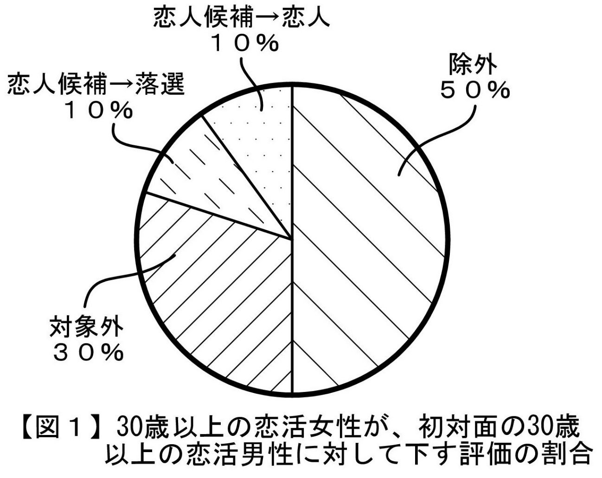

| ＜実態解明型＞男性が恋活前に知っておきたい30歳以上の恋活現場の傾向: "男性を惑わす女性の振舞い"の真意についても徹底解説 Luff up (Passlead Lab) | |
| 深沢 涼 & 植松 優奈 | |
| pasurido (2015) | |
目次
（３）"恋人候補"を選んだ恋活女性のうち、その約半数強は、"恋人"を選ばない
（ｂ）いわゆる重い恋愛（＝内心の関り度合いが深い恋愛）のみを望む女性の場合
（ｃ）重い恋愛を断固拒絶し、表面的な恋愛（＝内心関り度が浅い恋愛）を望む女性の場合
■１種類目： 恋活男性が○○だったら恋人にしてもいいけど、○○じゃなかったら、恋人にしない
（２）初対面の後、恋活女性がプライベートモードに変化していない
（３）初対面の後、「恋人や恋人候補になりたい」という意思が相手の恋活女性に伝わっていない
（４）初対面の後、「恋人や恋人候補になりたい」という意思を相手の恋活女性に伝えたが、その後の態度がネガティブである
（ｂ）「恋人や恋人候補になりたい」という意思を、対面して口頭で伝えた場合
はじめに
本書は、30歳以上の男性の恋愛ポテンシャルの更なる向上を目的として、近年の30歳以上の男女の恋活現場（以下、「恋愛市場」といいます）の傾向について、30歳以上の男性が恋活成功のために予め知っておくべき事柄を記載したマニュアルです。
男性は、生涯、"稼ぐ"という宿命を背負い、厳しい社会を、前を向いて走り続けています。
こうした中で、ふと気づいた時には、「自分の周りに愛がなくなっていた」のように感じることがあります。
「仕事や生活に余裕が出来たので、もう一度、恋愛をしたい。」
「仕事で崩していた体調が回復してきたので、これからは、ライフワークバランスを重視し、好きな異性と過ごす時間を大切にしたい。」
「子供の手が離れたので、第二の人生を共に歩めるような恋人を見つけたい。」
「仕事や家庭の達成感だけで終わりたくない。もう一度、恋の花を咲かせたい。」
男性の場合、このような思いを抱くタイミングが、30歳以降の人生の中で必ず一度はあるものと察します。
このような思いを抱いた男性がいざ恋活を始めてみると、数か月後には、打つ手なしの状況やあきらめモードに陥ることが往々にしてあります。「ギクシャク感やピリピリ感が満載で、思い描いていたようなリベラルな出会いがなく、そのような出会いを仕掛けることもできない。」のように。この現象については、既に恋活を始められている読者の方でしたら、ピンとくるかもしれません。
このようなことを書いている私も、実は、近年の恋愛市場に初参入した時には同様の思いを抱きました。ただ、私は、幸か不幸か、「目標が難しいほど燃える」という難儀な性質を生まれながらに持っています。ゆえに、私は、恋愛市場への参入を自己変革・成長の契機と捉え、それまでの恋愛に関する過去の経験や知見、恥、プライドを全て捨て去り、実際の恋愛市場に存在する多数の女性や男性との深い関わりを通じて、現在の恋愛市場を支配している価値観やその理由、その表と裏を、日々吸収していきました。吸収した期間は"直近約２年間のほぼ毎日"でしたが、恋愛市場への参入から半年後には、自分自身の内面や外見、行動を、恋愛市場にフィットするレベルにアジャストすることができました。
こうして私が実際の経験によって得た、受け売りではない生の恋愛市場の傾向や実態を、本書において皆様に還元したいと思います。これから恋活を始めようとしている男性、既に恋活中だけれども恋愛市場に馴染めなかったり上手くいかなかったりして悶々としている男性が、本書を読んで、現在の恋愛市場にてスムーズに恋活成功に向かえるようなギアチェンジができるように、恋愛市場における不可解な構造を明らかにしていくつもりです。
本書は、私の一連の恋活マニュアルの序章になります。私がこのような恋活マニュアルを書こうと思った動機は、30歳以上の恋活中の女性で私のことをよく知っている方々から、「私の恋愛経験に基づく知見を、30歳以上の恋活中の男性に対し、書籍を通じて伝えて欲しい」という要望を強く受けたことでした。それまでは、私自身、恋愛に関して特別な知見を持っているという自覚は全くありませんでした。しかし、こうした要望をきっかけとして私の人生を振り返ってみると、私は、普通の男性とは異なり、約40年間ずっと恋愛を中心的な価値として生き続けてきていることに気がつきました。この間、仕事と親友を除いては、心・時間・労力・お金・・・人としての原資のほとんどを様々なバリエーションの恋を実現するために使ってきたと言っても過言ではありません。加えて、これまでに私が恋愛に関して深く関わってきた多数の方々の評によれば、私は、普通の男性的なメンタルのみならず女性的なメンタルをも合わせ持っているらしく、確かに普通の男性には見えない知見や視点を持ち合わせているのかもしれない・・・と感じ、筆を執った次第です。
思うに、現在の恋愛市場は、平成１５年以前のものとは全く異なったものになっています。例えば、直近１０年間においては、ＳＮＳ等の新たな出会いの方法やコミュニケーション手段が世代を超えて浸透する一方で、こうした浸透の結果、心の貧富差も顕在化してきました。また、年齢層を問わず、モラルが急激に低下し、人を信じにくい社会になりました。こうした変化に伴い、女性の心を射止めるためのアプローチ手法は大きく変わりました。例えば、肉食系男性が得意なアプローチ手法の１つであった「押し」は、現在の恋愛市場では、良く取られて「ゴリ押し」、悪く取られれば「横暴、パワハラ」のような評価をされてしまいます。草食系男性が得意なアプローチ手法の１つであった「引き」は、現在の恋愛市場では、良く取られて「リスクを取らない性悪男」、悪く取られれば「何を考えているかわからない、危険人物」のような評価をされてしまいます。
また、この１０年の間に、男性においては、各人の持つ付加価値の格差が広がる一方で、女性においては、男性に対する精神的・経済的依存度が低下しており、これらの傾向は、現在もなお進行しています。これにより、女性が男性を好きになる理由、女性の恋愛感情が形成されるステップ等が、"変化"というレベルに止まらず、従来の基準では推し量れないほどに"複雑化"してきています。
このような恋愛市場の現状を知らないまま、男性が「魚を釣る釣り人」のようなイージーな感覚で恋愛市場に参入することは、極めて危険です。参入後に、たちまち立場が逆転して魚と化し、女性から釣られた瞬間に「違う」、「いらない」と言われて捨てられ続け、プライドがズタズタになってしまうからです。
このようなことは、本書をお読みになられた後においては、すんなりと納得でき、対策のイメージが湧いてくるものと思います。
なお、こうした対策を立てるに際しましては、私の別著として、30歳以上の女性の恋人候補や恋人に選ばれるために不可欠な内面要素・外見要素を重要度順に解説した「恋活前のセルフチェック１ 【知人→恋人候補編】 」、「恋活前のセルフチェック２ 【恋人候補→恋人編】 」 をご用意しております。是非、皆様の恋活成功にお役立て頂ければと思います。
昨今の30歳以上の女性には、もちろん満足かつ幸せな恋愛生活や結婚生活を送っている方もみえますが、実際には、既婚者、独身者、離婚後独身者を問わず、日々の職場や家庭での義務を果たし続けていくための活力源として、「お互いに、分かり合え、思いやり合え、いたわり合える関係」となれる男性を求めて恋活をしている方が相当数いらっしゃいます。こうした女性の恋活は、必ずしも結婚を前提としたものではありません。むしろ、ストレス社会におかれている30歳以上の女性にとっては、「経済的な充足」よりも「心の充足」を強く求める傾向が高まっているということを、私は肌で感じています。
こうした昨今の女性の傾向については、おそらく、本書を購入されるような恋活に積極的な男性の皆様であれば、既にお感じになっていることではないかと察します。
他方、昨今の男性の傾向としては、「自分を愛してくれる女性がいない男性」や「自分を愛してくれる女性を求める男性」の数が、年齢を問わず、飛躍的に増加しています。
恋の出会いの機会は、自ら積極的に持つように努めない限り、歳を取っていくにつれて少なくなっていくものであり、この傾向は特に仕事漬けになりがちな男性の場合に顕著です。こうした貴重な出会いの機会を、成就させられないまま人生終了する生き方よりも、成就させて楽しい人生を送る生き方の方が、何倍も素敵だと思います。
「本書を読んだ男性が、本来持っていたはずの何かを忘れていたことに気づき、その後にすんなり恋人ができ、日々、愛を感じる幸せな時間を持てるようになった」
私は、そのような知らせを何より嬉しく思います。
深沢 涼
本書に関してご留意頂きたい事項
●本書において登場する男性及び女性は、恋愛する意思と恋愛するために必要な最低限の環境（健康、時間、お金等）を備えている男性及び女性になります。
●本書では、対象とするパーソナリティを、30歳以上の男性のうちの恋人を見つけたいと思って活動している一般人男性（以下「恋活男性」といいます）、30歳以上の女性のうちの恋人を見つけたいと思って活動している一般人女性（以下「恋活女性」といいます）に絞っています。よって、29歳以下の男性・女性の恋愛、一般人以外の方の恋愛については、本書では取り扱っておりません。
●本書における「恋活」とは、純然たる恋愛目的（以下「恋愛目的」といいます）の女性が恋人を見つけるための活動を意味します。従って、 "結婚を前提とした恋愛をする目的"や"恋愛感情の有無とは無関係にとにかく結婚を実現する目的"（以下、これらを総称して「結婚目的」といいます）の女性が配偶者を見つけるための活動（以下、「婚活」といいます）や、 経済的支援を受ける目的（以下「支援目的」といいます）の女性が支援者を見つけるための活動（以下、「援活」といいます）については、本書では取り扱っておりません。
●本書における 「恋人」とは、既婚又は未婚に拘わらず、純然たる恋愛目的の女性と男性が、お互いの偽りなきプライバシーに基づき、お互いに"心を通い合わせて思いやり合う時間を共有していきたい"と思う関係のことを意味します。よって、「プライバシーを偽ったお付き合い」、「体目的のみのお付き合い」等については、本書では取り扱っておりません。
●本書では、恋活男性がターゲットとする女性を恋活女性に絞っています。よって、「恋愛を求めていない」、「恋人はいらない」というステータスの女性の活動傾向については、本書には記載されておりません。
●本書における 「恋活男性が意中とする恋活女性」は、一般的にみて、広範囲の男性から意中と思われ易い女性をモデルにしています。よって、本書では、 30歳以上の恋活女性のうち、「恋活男性が意中とする恋活女性」のことを、恋活男性にモテる女性であるという意味合いで"モテ女性"という用語で表すことがあります。
●本書における恋活は、「以前から懇意にしている女性との恋活」や「自分への好意を既に抱いている女性との恋活」等の男性に有利な環境下での恋活は、想定しておりません。従って、このような男性に有利な環境下での恋活に絞るのであれば、本書に記載した厳しい傾向の全てを理解しなくても、恋活をスムーズに進めることができます。
●本書は、近年の30歳以上の恋愛市場の傾向を記述したものです。この傾向を踏まえた上で、「どんな要素を身に付け、どんな行動をしたら、恋愛成就できるのか？」ということにつきましては、原則として本書の記載内容を理解している男性の方を対象とした「恋活前のセルフチェック１【知人→恋人候補編】」、「恋活前のセルフチェック２【恋人候補→恋人編】」 という別マニュアルに記載しております。
●本書では、現在の恋愛市場において、30歳以上の恋活女性から恋人として選ばれるために、30歳以上の恋活男性に不足しがちな点や不利に解釈されやすい点を多々指摘しています。こうした指摘は、あくまで、恋活の場面における不足や不利を指摘するものであり、恋活以外の場面における恋活男性の不足や不利を指摘するものではありません。
●本書に記載されたデータや数値は、あくまで私の実際の経験や知見に基づいて所定の恋活男性ないし恋活女性の母集団における実績から合理的に推定した内容であり、その正確性について保証や科学的証明を付するものではありません。
●本書の内容は、あくまで私の実際の経験や知見に基づいて記載しておりますので、読者の方の中には私とは異なる意見の方もいらっしゃると思います。何分、科学的に唯一の正解の出しにくいテーマであることをご斟酌の上、本書を一つの見解として参考にして頂ければと存じます。
第１章 30歳以上の恋愛市場の傾向
恋活の場となる「恋愛市場」。
ビジネス界で中核的存在として活躍されている30歳以上の男性であれば、「市場の現状を見ずに商品を投入しても商品は売れない」
ということを肌で理解されていることと察します。
そこで、まず初めに、近年の30歳以上の恋愛市場において認められる傾向について、読者の皆様との間で共通認識をしておきたいと思います。恋活成功のために認識しておきたい大きな傾向として、恋愛市場全般に関するものを４つ、女性による男性の選択に関するものを４つ、ご紹介していきます。
なお、以下に記載する傾向は、直近２年間のリアル社会及びＳＮＳにおける、私自身の恋活経験及び私と深い意思疎通のある多数の30歳以上の恋活女性の恋活経験に基づくデータ（以下、「深沢データ」といいます）に基づいて考察ないし推定したものです。この深沢データは、単なる見ず知らずの女性に対するアンケートではなく、実際に私と懇意になった多数の恋活女性が私に露わにしてくれた内心に基づいて作成されていますので、ミリ単位での正確性には欠けるかもしれませんが、現在の恋愛市場の実態と大きくかけ離れていることは無いものと私は考えています。
１．全般
（１）女性優位
現在の30歳以上の恋愛市場では、恋活男性の数が恋活女性の数よりもかなり多い状態になっています。深沢データによれば、「実際に恋人を作る意思がある人」の男女比は、男性： 女性＝５： １程度であると推定されます。よって、現在の30歳以上の恋愛市場では、女性が"選ぶ側"として男性よりも圧倒的に優位に立っています。
このアンバランスな男女比の要因は、恋人を欲する女性が少ないからではなく、パートナー不在のまま淋しい私生活を送り続ける男性の数が増大 しているからであると考察されます。こうした男性としては、例えば、「パートナーとの離別や離婚後に新たな恋人を見つけようと思ったが、それまでの長期間に亘る "あぐらのかき過ぎ"により外見や内面が老け込んでしまっていて、現在の恋愛市場で通用せず、恋人ができない男性」、「リアル社会では、女性に縁が無く、女性からも距離を置かれた人生を送り続けているので、自分の現在や過去の評価を知らない人の集団であるＳＮＳにて恋人をつくろうとしたが、思うような恋人関係ができない男性」などを考えることができます。
加えて、恋愛市場における"実際に恋人を作る意思がある人"の経時的な増減について、深沢データをベースに、男女別に考察してみました。この結果、恋人関係成立によって恋愛市場から抜けていく人を「退出者」、恋人を求めて新たに恋愛市場に入ってくる人を「参入者」とした場合、次の２つの傾向があることがわかりました。
・女性の場合には退出者と参入者はほぼ同数である一方、男性の場合には参入者の数が退出者の数よりも多い。
・女性の退出者の数は男性の退出者の数よりも多い。
これにより、男性の場合には、恋活を始めた後に、「恋人が見つかった人」にも「恋人を見つけるのをあきらめて恋活を止めた人」にもなりにくく、恋人を見つけるのをあきらめきれずに恋愛市場に滞留しがち であることがわかります。
以上より、恋活男性にとっては、恋愛関係成立のためには、「恋愛市場において他の恋活男性との競争に勝つ」ということが必須となり、その競争が日々激化している・・・まさに現在の恋愛市場は、男性にとって"戦国時代" と言うことができます。
（２）市場での恋活： 男性は常時型、女性は気まぐれ型
上述 の（１）において 、参入者及び退出者について男女間に差異が生じている理由としては、次のことが考えられます。
・30歳以上の女性の場合、恋以外にも趣味等の楽しみを持っている方が多いので、常に恋愛市場に身を置いて恋活をする必要は無いことから、恋愛市場への参入や退出は気まぐれ的なものになる。
・他方、30歳以上の男性の場合、女性と比べて、仕事に匹敵するほどの趣味や、恋愛に匹敵するほどのプライベートの人間関係を持っていない方が多い。このため、仕事に没頭している男性以外は、恋愛の実現に固執して恋愛市場に常駐し、「なんとしても恋人を作ろう」という意思で継続して恋活をしがちである。
よって、恋活男性にとっては、残りの人生の時間を有意義に活用するためにも、「女性の恋活スイッチが入っている時に、この女性との出会いのチャンスを確実にモノにして 、恋愛市場における長期の滞留を避ける」という意思で臨むことが大切になります。
（３）ターゲット： 男性は広め、女性はピンポイント
30歳以上の恋愛市場におけるターゲットの設定傾向は、男女間で大きく異なっています。具体的には、恋活男性の場合には、意中の恋活女性の条件を比較的緩め又は広めに設定しているのに対し、恋活女性の場合には、意中の恋活男性の条件（特に、内面要素に関するもの）を狭くピンポイントに設定している傾向があります。
他方、こうした恋活女性が設定しているピンポイントな個々の条件については、実際には「満たしていることが絶対に必要なもの」、「満たしていることが望ましいもの」、「満たしていなくても構わないもの」のようにレベル差や序列があり、このレベル差や序列は、恋活女性によって微妙に異なります。
よって、恋活男性としては、意中の恋活女性との恋愛を進展させていくためには、恋活女性が設定しているピンポイントな個々の条件をまともに受けて揺さぶられることなく、各条件についての真の意味合い（例えば、レベル差や序列、恋心を形成し得る他の条件の存在等）を解読 し、相手の恋活女性から「全体として条件を満たしている」という評価を得られるように進めていく必要があります。
（４）出会いの場づくりも"実質的に女性主導"
30歳以上の女性のうち、恋人を見つけたいと思って活動している恋活女性は、その外見・内面についての男性からの一般的評価（支持率）の高低に拘わらず、職場やサークル等のコミュニティやＳＮＳ、社会人サークル等において、男性からの誘いが引く手あまたな状況となっています。見た目年齢が若い恋活女性であれば、20代の恋活男性からも、当たり前のように誘われます。また、外見・内面についての男性からの一般的評価（支持率）が低い女性であっても、既述したように恋愛市場は圧倒的に女性優位であることから、男性に対するハードルを落としさえすれば、必ず男性との接点を持つことができ、その後に恋愛にも発展しています。
このような状況に鑑みると、恋活女性が恋人を見つけたいと思って活動している範囲は、恋活女性自身が引く手あまたな状況になることを予見可能である ことから、恋活男性にとって、"女性主導で恋愛発展へのきっかけができ易い場所"ということができます。
よって、恋活男性は、恋愛実現の大前提として、このような場所に参加して身を置く ことが必要になります。いくら外見や内面の価値の高い恋活男性であっても、自らの必要最小限の生活範囲でじっと待っているだけでは、自分の意図する相手との恋愛を実現するチャンスを得ることが困難な時代なのです。
２．女性による選択
（１）恋活女性の主流は「年下嗜好」
30歳以上の恋活女性が属する現在の恋愛市場において、恋人対象として人気の高い男性の年齢（30歳以上に限定）は、選ぶ恋活女性の年齢に拘わらず、圧倒的に30代男性（平均支持率： 推定50％ ）であり、次いで40代男性（平均支持率： 推定40％ ）、50代以上の男性の推定平均支持率は10％ 程度しかありません。
こうした年下男性嗜好の要因は、30歳以上の恋活女性の「相手の男性の外見や内面についてのＮＧ要素」が、世代を超えてほぼ共通しており、このＮＧ要素の内容が「恋活男性が高齢になるほど顕著になる性質のもの」であるからです。ＮＧ要素の内容につきましては、「恋活前のセルフチェック１【知人→恋人候補編】」 に詳しく記載しておりますので、ご興味のある方は、是非、お読み頂ければと思います。
よって、恋活男性にとっては、恋愛成就のためには、「年上上位（＝女性にとっての男性の価値は、年上の男性方が高い）という古い考え方を完全に消し去り、年下男性と、対等な目線で、かつ、謙虚な姿勢で、競争していくこと」が、とても大切になります。
（２）１人の恋活女性は、平均２人弱の男性を "恋人候補"に
上述したように、30歳以上の恋愛市場は、"女性優位"かつ"女性主導"であることから、恋活女性は、初対面で恋活男性のことを気に入った場合であっても、その恋活男性の扱いを即座に"恋人"とはせず、まずは"恋人候補"という地位に止めます。そして、その恋活男性の内面（特に、行動）を中心に、恋活男性が自分の恋人として相応しい外見及び内面を備える男性であるかどうかをじっくり観察して見極めていくのです。
「１人の恋活女性が、特定の恋人を選ぶために、平均して何人の恋活男性を恋人候補と位置付け、観察したか」ということについては、その女性の「恋人を欲する度合いの強さ、プライベート領域の入口の壁の高さ、男性からの一般的評価（支持率）の高さ等」によって、恋活女性ごとにばらつきがあります。この平均値を、深沢データから想定してみると、恋活女性１人当たり約２人弱の恋活男性を恋人候補として選んでいるものと推定されます。
この点につき、私が数々の恋活現場を経験して少々驚いたことは、「３人以上の男性を恋人候補として観察し続ける女性が意外に多かった（深沢データでは、恋活女性全体の約20％ ）」ということです。この理由について、実際に私が深く関わった多数の恋活女性と共に考察した結果、次のような、恋活女性の置かれた環境や状況に応じた様々な理由があることが確認できました。
●恋活を始めて、良い感じの恋活男性に何人か出会ったけれども、いずれもピンポイントの好みではない。なので、この恋活男性たちをピンポイントの男性が現れるまでキープしておき、もし、しばらく待ってもピンポイントの男性が現れなかったら、妥協して、この恋活男性たちの中から恋人を選ぼうと思っている。
●信用できない男性とは恋人になりたくない。どの相手が最も信用できるかを見極めるためには時間がかかる。そこで、何人かの男性を恋人候補に位置付けて同時進行させ、その後の彼らの一挙手一投足を観察して、誰が最も信用できる男性かということについて値踏みをする必要があるから。
●自分に自信が無いので、恋活男性１人だけを恋人候補にしても、相手の恋活男性に気に入ってもらえるかどうかがわからないし、最初はうまくいっていても途中で関係が悪くなるかもしれないから。
●今、私は、どうしても、私のことを大切にしてくれる彼氏が欲しい。淋しさを紛らわすために良さそうな男性の何人かを恋人候補として選んでいるが、その中には、今のところ、私のことを大切にしてくれる男性はいない。
確かに、恋活を始めてから最初の出会いでお互いにピンポイントな人に巡り合う確率は極めて低いことを考えますと、こうした恋活女性の恋人候補としてのキープ行為は、直ちに非難されるものではなく、むしろ、出会いの機会の少ない現代社会においては、「せっかくの出会いなので、大切にしておく」というクレバーな行動であるかもしれません。
なお、恋活女性が恋人候補を選定する段階は、恋活において、意中の恋活女性との恋人関係の成立の確実性を高めるために最も重要な場面になります。よって、詳細な実態につきましては、次章以降にて、紙面をさいてしっかりと説明をさせて頂きます。
（３）"恋人候補"を選んだ恋活女性のうち、その約半数強は、"恋人"を選ばない
上述の（２）において、「恋活女性は、特定の恋人を選ぶために、1人につき平均２人弱の恋活男性を恋人候補として選ぶ」という傾向についてご紹介致しました。もし、「恋活女性が恋人候補の中から必ず１人の恋人を選ぶ。」ということを前提とするのであれば、１人の恋活女性から恋人候補として選ばれた男性は、50％ の確率で、その恋活女性から恋人に選ばれることになります。
しかし、深沢データによれば、恋人候補を選んだ恋活女性の約半数強は１人も恋人を選びません。このような恋活女性は、その後、それまでに恋人候補として選んだ全ての恋活男性を「お友達」という微妙な地位に据え置く等の手法によって恋人候補の地位をリセットした上で、再び新たに、特定の恋人を選ぶための恋活を始めるのです。
このように恋人を１人も選ばない恋活女性の存在やその理由につきましては、次章である「第２章 恋活女性による恋人選定の実態」 にて詳しく説明させて頂きます。
一方、残りの半数弱の恋活女性は、恋人候補として選んだ恋活男性の中から恋人（即ち、相思相愛になれる男性）を見つけ、恋愛関係を成立させます。しかし、恋愛関係を成立させる目的、恋愛関係を成立させる数（＝恋人の数）、相手の恋活男性に対する妥協度合い等については、恋活女性ごとにかなり幅があり、実際の恋愛市場においては、例えば、次のような恋活女性が混在しています。
●相手の恋活男性がピンポイントな人で、相手の恋活男性も自分のことを同じように思ってくれたので、恋人に選ぶ女性
●相手の恋活男性がピンポイントな人であるが、相手の恋活男性の自分に対する想いは煮え切らない感じである。けれども、ピンポイントな人はなかなか見つけられないので、相手の恋活男性から意図した想いをもらえないことを覚悟して、恋人に選ぶ女性
●とりあえず淋しさを紛らわしたいので、自分のことを大切に想ってくれる男性であれば、その他の内面や外見については妥協して、恋人に選ぶ女性
●恋愛実現欲求が高く、男性と深く関わるひと時を途切れなく維持したい等の理由により、２人以上の男性を恋人に選ぶような積極的な女性
●恋活に払う労力や恋活に費やす時間が少ないことから、恋人候補として選んだ男性のうち、「外見が平均以上で、自分のことを大切に想ってくれる男性で自分のことを拘束しない男性」を恋人に選ぶ女性
いずれにしても、恋活男性にとっては、自分のことを恋人候補に選んでくれた恋活女性が自分の意中の女性である場合には、その恋活女性から確実に恋人として選んでもらえるようになりたいですね。
（４）勝ち組男性への集中化
実際の恋愛市場では、"女性優位"の市場であるにも拘わらず、恋活女性が恋人候補や恋人に選ぶ恋活男性が特定少数の男性に集中し、 １人の恋活男性が多数の恋活女性から恋人候補や恋人に選ばれるという現象（以下「ハーレム現象」といいます）が生じています。
このような勝ち組男性は、しばしば、次の事例のような状況に置かれます。
【事例１】女性Ａさんは、その勝ち組男性が他の女性Ｂさんから「恋人候補」として選ばれていることを知りながら、その勝ち組男性を恋人候補として選ぶ。
【事例２】女性Ｃさんは、その勝ち組男性が他の女性Ｄさんから「恋人」として選ばれていることを知りながら、その勝ち組男性を恋人として選ぶ。
そもそも、恋活女性は、「今、自分は、どのような恋愛がしたいのか」ということを表す恋愛モードというものを持っており、この恋愛モードは、時期や場所、環境に応じて変化する性質を持っています。
【事例２】 のようなケースは、恋活女性の恋愛モードが、一般的な通常モードである場合には、いくら相手の恋活男性がピンポイントであったとしても生じません。この"一般的な通常モード"とは、例えば、「恋人とは一対一の関係であるという原則を形式的に貫きたい」、「相手の男性から振られることによって自分が傷つくことを回避するために、"恋活男性の自分に対する好き度が、自分の恋活男性に対する好き度よりも高い"という条件を必須としたい」のような常識的なポリシーを冷静に持っている状態を意味します。
他方、恋活女性がこうした一般的な通常モードではない場合には、【事例２】 のようなケースが実際にしばしば生じています。女性Ｃさんが、既に恋人（女性Ｄさん）がいるような勝ち組男性を恋人候補として選ぶ理由としては、「女性Ｄさんから恋人の座を奪うため」という発展的な理由の場合もありますが、実際には、「恋人の座はどっちでもいいけど、その男性は自分にとって価値があるので、とにかく、密に接していたいから」という刹那的な理由の方が多数派です。
このように、恋愛市場では「少数の勝ち組男性を巡る恋活女性の肉食化」 が実際に起きているのです。こうした肉食化は、恋活女性が「30歳以上の恋愛市場では、自分のピンポイントな設定条件を満たし、自分の恋人として相応しい外見及び内面を備える男性の数が極めて少ない」と自らの恋活の経験によって実感したことに起因して生じています。「恋人として要求する外見及び内面のハードルを下げて、自分の恋人として相応しい外見及び内面を備えない男性と恋人として時間を過ごしても、人生に刻まれる大切な出来事とはならず、無意味である。」このくらい明確な強い想いで恋活に臨んでいる女性も少なからずいらっしゃるのです。
恋活男性にとっては、現在勝ち組である恋活男性の場合には「今後も、勝ち組状態を維持していきたい」と思い、現在勝ち組でない恋活男性の場合には「自分の意中の恋活女性に対しては、勝ち組と対等に戦えるようにしたい」、「自分も勝ち組に入りたい」 のように思うことでしょう。
第２章 恋活女性による恋人選定の実態
それでは、第１章の市場傾向を踏まえた上で、30歳以上の恋活女性が恋愛市場において恋人を選定するまでの実態について、読者の皆様に具体的なイメージが浮かぶように、ご紹介していきたいと思います。
恋活女性は、恋人選定までに次の３つのプロセスを辿ります。
第１段階： フィルタリング（除外・対象外とする男性の選定）
第２段階： 恋人候補の選定
第３段階： 恋人候補からの恋人の選定
以下、各プロセスに分けて実態を説明していきます。
【第１節】第１段階： フィルタリング
恋活女性が恋人選定までの間に最初にするアクションは、フィルタリング、即ち、恋人候補にしたくない、かつ、なり得ない恋活男性を特定し、恋人候補の対象から取り除くということです。
なお、このフィルタリングは、「恋活女性が、相手の男性を男として意識し、恋人としてプライベート領域に入れるかどうかを判断する時」になされるものであり、そうでない時にはなされません。例えば、女性が、職場やサークル等のコミュニティで出会った男性に対して、次の（ａ）や（ｂ）のような意識である場合には、男性から告白されない限り、フィルタリングはなされず、フィルタリングがなされない以上、恋人候補や恋人として選定されることもありません。詳しくは、第３章にてご説明致します。
（ａ）仕事等の仲間としての意識に止まり、プライベート領域に入れることを想定していない場合
（ｂ）仕事等の仲間としての意識のみならず、知人としてプライベートの付き合いはあるが、男として意識することを想定していない場合
１． 初対面で、男性の80％ が、女性の恋人候補から脱落する
まずは以下の図１ をご覧下さい。

この図１ は、30歳以上の恋活女性が、何人かの30歳以上の恋活男性に初めて会った後に、各恋活男性についてフィルタリングを行って下した評価の割合です。この割合は、あくまで、深沢データに基づいて算出した概算値です。なお、本書における「初対面」とは、出会いのきっかけが何であるかを問わず、二人きりで会うことを約束した上で初めて二人きりで会う機会のことを意味します。
図 １ 中の「除外」は「空間を共にしたくない」という評価、「対象外」は「空間を共にしてもよいが、恋愛対象としてはあり得ない」という評価、「恋人候補」は「恋愛対象としての決め手は無いが、他により良い男性に出会えなかったら、恋愛対象になるかもしれない」という評価を意味します。「恋人候補」のうちの「恋人」は初対面の後に何らかの恋愛関係に発展したケース、「恋人候補」のうちの「落選」は初対面の後に何らかの恋愛関係に発展しなかったケースを表しています。
このように、30歳以上の恋活女性は、初対面で、除外50％ と対象外30％ に属する計80％ の男性を、恋愛対象としてあり得ないと判断し、恋人候補から外していることがわかります。
２．初対面で恋人候補から外される男性は、ほぼ固定化している
以下の図２ をご覧下さい。この図２ は、図１ に示した割合の元となるデータの一部を抜粋したものです。
図 ２ に示すように、男性Ａ、男性Ｂ、男性Ｅ、男性Ｆは、女性Ａ〜Ｆのいずれの女性からも初対面で恋人候補から外されている一方、男性Ｃ、男性Ｄは、女性Ａ〜Ｆのいずれの女性からも初対面で恋人候補として残されています。
このように、30歳以上の恋活女性が初対面で30歳以上の恋活男性に下す評価は、女性によって大きく変わるものではなく、ほぼ固定化していることがわかります。第１章にて「勝ち組男性への集中化」とう現象について触れましたが、この現象を生じさせる背景には、「負け組男性が固定化している」 という実態があるのです。
このような偏りが起きている主たる理由として、次の２つが考えられます。
●現代の恋愛市場には、恋活女性が望む"恋愛の質"を満たす恋活男性の絶対数が少ないこと
●現代の恋愛市場には、恋活失敗に対する自分自身の原因について理解や除去をしようとする恋活男性の数が少ないこと
現代の恋愛市場においては、こうした２つの理由を知ることなく、「いつかは、自分を選んでくれる良い女性に巡り合えるはず」というイージーモードで恋活を継続し続ける恋活男性が増え続けており、"恋活男性のガラパゴス化"が顕著になっています。
なお、これらの２つの理由は「恋活男性の持つ内面要素や外見要素、行動」に起因して生じるものであり、ここでその詳細な意味内容を説明致しますと本書のテーマからずれてしまいます。よって、これらの２つの理由の詳細な意味内容につきましては、「恋人候補から恋人として選ばれるために」ということをテーマにした「恋活前のセルフチェック１【知人→恋人候補編】」 に委ねたいと思います。
【第２節】第２段階： 恋人候補の選定
恋活女性から恋人候補として選ばれる恋活男性は、図１に示したように、固定化された除外・対象外の男性を差し引いた残りの約20％ の男性であり、必然的に固定化 します。よって、恋愛市場において男性が実りや希望のある恋活を行うためには、まずファーストステップとして、恋活女性から恋人候補に選ばれる確実性を高める（換言すれば、フィルタリングされる要因を失くす） ということがとても重要なポイントになります。このために恋活男性が備えるべき内面要素や外見要素の内容や優先順位につきましては、「恋活前のセルフチェック１【知人→恋人候補編】」 に詳しく記載しておりますので、ご興味のある方は、是非、お読み頂ければと思います。
１．恋人候補の選定は、恋活における最重要段階
さて、第１章にて「恋愛市場における恋活男性と恋活女性の推定比率は約５： １」、「恋活女性１人当たり約２人弱の恋活男性を恋人候補として選んでいる」という傾向について触れました。この傾向と図１ の恋人候補に選ばれる男性の固定化という実態とを合わせて考えてみると、次のような楽観的な予想をすることもできます。
「恋人候補に確実に選ばれる約20％ の中に入ることができれば、男女比１： １となり、かつ、１人の男性が複数の恋活女性から恋人候補に選ばれる可能性が高くなる。よって、意中の恋人を見つけることも楽勝ではないか・・・」
私も、近年の恋愛市場に参入したばかりの頃には、恋活女性との出会いを重ねていくにつれて、恋活女性の恋人候補に入るのはそんなに難しいことではないと感じ、同様の予想をしていました。
また、既に恋愛市場で恋活をしている読者の方の中には、「既に何人かの恋活女性とメールアドレスを交換してメールをやり取りしているから、きっと、この中から恋人になる女性が見つかるだろう。」という希望を抱いている方もいらっしゃるかもしれません。
しかし、私は、実際に２年間、ガチな恋活経験をしてみて、「恋人関係の成立の実態は意外と厳しく、恋人候補に選ばれたくらいで喜んでいてはいけない。」と強く感じました。
逆に言えば、私は、多数の恋活女性との恋活経験を経てはじめて、「恋活女性が恋人候補を選定する段階は、恋活において、意中の恋活女性との恋人関係の成立の確実性を高めるために最も重要な場面である」ということを、ひしひしと痛感しています。恋活女性が恋人候補を選定する段階での予備知識の豊富さ、判断力の的確性が、実りや希望のある恋活になるかどうかを決するのです。 このことは、本書のメインテーマとなりますので、本章のみならず、次の第３章においても、詳細に記述していきたいと思います。
２．予備知識として持っておくべき選定実態
それでは、恋活女性による恋人候補の選定段階において、恋活成功のために予備知識として備えておきたい３つの実態について、順に説明していきたいと思います。
（１）高ハードル女性の存在
まず、１つ目に知っておいて頂きたい実態は、「新たな恋活男性との出会いを重ねていて、何人もの相手の恋活男性から恋人になりたいと告げられているにも拘らず、どの恋活男性も恋人候補として選ばない恋活女性（以下、「高ハードル女性」といいます）」が、恋愛市場には相当程度、存在するということです。このような恋活女性の比率は、深沢データでは恋活女性全体の約10％ となっていますが、「恋人を選んでいない」という無の実態は表れにくいことを考慮すれば、実際には、この比率はもう少し高いのではないかと予測されます。
大半の恋活女性の場合には、相手の恋活男性に対して、「恋人候補にする／しない」を判断する場面では若干緩めの基準を用いて判断し、「恋人にする／しない」を判断する場面では厳しめの基準を用いて判断する、という２段階の基準を用いた判断を行います。例えば、相手の恋活男性について「ピンポイントではないけど、全体的に見て、恋人として悪くはないかな」と思った場合には、その恋活男性をとりあえず恋人候補にしておき、しばらく付き合って様子を見るものです。恋活女性が恋人の条件として重視するのは内面要素であり、この内面要素の内容については、相手と実際に時間の共有を重ねてみないことには、わからないものだからです。そして、その後に、「やっぱりなんか求めている男性と違う」と感じた場合には、恋人にしないという判断をするのです。
他方、高ハードル女性の場合には、相手の恋活男性に対して、上述のような若干緩めの基準を併用した２段階の判断を行わず、「恋人候補にする／しない」ということについても、「恋人にする／しない」ということについても、一律に厳しい基準を用いて判断します。よって、高ハードル女性は、恋人に選ぶようなピンポイントな男性でなければ、恋人候補にすら選びません。 相手の恋活男性が「全体的に見て恋人として悪くはないかな」と思ったくらいでは、恋人候補に選ばず、更に、この恋活男性から「じゃあ、友達からお願いします。」と言われても、「友達から恋人に発展させる狙いなのであれば、私としては恋人になる可能性ゼロなので、時間の無駄である」と考え、自身のプライベート領域に入れることすら拒絶してしまう のです。
このような高ハードル女性の場合には、「積極的に恋活していても、恋人候補を１人も選ばない」ということが普通にあります。つまり、恋活男性としては、「普通に恋活をしていて、複数の恋活女性から恋人候補に選ばれたとしても、この中に高ハードル女性が含まれている確率は極めて低い」 という現実を覚えておいて頂ければと思います。
次に、高ハードル女性がどのような女性なのかについて、明らかにしていきます。高ハードル女性は、主として次の（ａ）から（ｃ）の３つのタイプ に分類されます。
（ａ）モテ女性
（ｂ）いわゆる重い恋愛（＝内心の関り度合いが深い恋愛）のみを望む女性
（ｃ）重い恋愛を断固拒絶し、表面的な恋愛（＝内心関り度が浅い恋愛）を望む女性
加えて、深沢データによれば、（ａ）のモテ女性 のみならず、（ｂ） 及び（ｃ） のタイプに属する女性も、その外見（オーラを含む）についての恋活男性からの支持率が高い女性である という特徴があります。支持率が高い女性とは、例えば、「５対５の合コンをした時に、５名の男性全員のファーストインプレッションが集中する女性」というイメージになります。
各タイプの恋活女性の特徴と簡単に恋人候補を選ばない理由は、次の通りです。
（ａ）モテ女性の場合
このタイプの女性は、多数の男性から真剣に求愛され、様々な男性の価値観や内心を知る機会に恵まれていることから、男性に対する内面洞察力が非常に優れています。また、このタイプの女性は、男性との恋愛（結婚目的の恋愛は除く）に関しては、「過去以上であること」が不可欠の条件となります。
よって、このタイプの女性は、恋活男性と３０分から１時間くらい時間を共有するだけで、相手の恋活男性の底やこの男性との将来が見えてしまいます。そして、「過去以上の恋愛にはならない」と予見すると、たとえ相手の男性が一般的には女性に好まれるような外見・内面であったとしても、「私は、この男性と恋人になることはあり得ない。」と即座に決断してしまうのです。
読者の方に留意して頂きたい点は、このタイプの女性は、「私はモテるので、もっと良い男性に巡り合えるから、目の前の程度の男性は断ってしまおう」と余裕をかましている訳では無いということです。相手の恋活男性に関する底や将来が瞬時に見え過ぎてしまうため、見えなかった状態に戻れないだけのです。
（ｂ）いわゆる重い恋愛（＝内心の関り度合いが深い恋愛）のみを望む女性の場合
このタイプの女性は、現在の恋愛市場では、（ａ）から（ｃ） の ３つのタイプ の中で、最も少数派です。
このタイプの女性は、過去に重い恋愛の良さを経験していることから、重くない恋愛ができない体になっています。また、このタイプの女性は、人生数々のイベントのうち、恋愛は、特別に重要なことであり、自分の生きる力を維持するために必要不可欠で、他のイベントでは代替できないという考えを固持しています。加えて、このタイプの女性は、過去の重い恋愛において、お互いの内心をとことん追求して理解し合い、恋人男性の内心について醜いものまで深く知っています。このため、相手の男性のふとした行動から「内心、何を考えているのか？」ということを推察する力が非常に優れています。
よって、このタイプの女性は、恋活男性と３０分から１時間くらい時間を共有することによって、「相手の恋活男性が恋愛において内心を開披して関わり合おうとしている程度」が見えてしまいます。そして、「内心の開披や関わり合いの程度が浅い」と予見すると、たとえ相手の男性が一般的には女性に好まれるような外見・内面であったとしても、「私は、この男性と恋人になることはあり得ない。」と即座に決断してしまうのです。
（ｃ）重い恋愛を断固拒絶し、表面的な恋愛（＝内心関り度が浅い恋愛）を望む女性の場合
このタイプの女性は、（ｂ）のタイプの女性 の対極に位置しており、現在の恋愛市場では、（ａ）から（ｃ） の ３つのタイプ の中では最も多数派です。
このタイプの女性は、「人生は、世間体、見てくれ、建前、形式を重視し、争いを避けて平和に過ごすものである」というポリシーを固持しています。故に、家族等の血縁的・財産的な繋がりのある人以外の他人に対しては、プライベートかパブリックであるかを問わず、表面的な付き合いに止めます。
このタイプの女性の場合、単なる恋人は、戸籍、財産等において何ら法的なつながりや約束も無い関係であり、家族や結婚目的の男性よりも下に位置付けています。
このため、このタイプの女性は、恋人との付き合い方も表面的であり、「面倒くさい男性は、恋人としてＮＧ」という考えを固持しています。例えば、恋人男性から、面倒くさい対応を迫られたり、内心に深く入り込まれたりすると、「家族でもないのに、なんで貴男にそこまで対応したり、深く入り込まれなきゃいけないの」のように、自分自身が表面的で平和に保とうとしている領域を恋人男性に侵害されたと感じてしまうのです。読者の方がイメージし易いように、このタイプの女性の恋愛に対する考え方をラフに表現すれば、「恋人は、自分でコントロールできるヒマつぶしみたいなものなので、いないならいないでＯＫ。あれこれ要求してきて面倒くさくなったら切る。いわば流行りのゲームアプリみたいなもの。」という感じになります。
よって、このタイプの女性は、恋活男性と３０分から１時間くらい時間を共有することによって、表面的な価値観やノリが合うかどうか、表面的な価値観やノリだけで楽しめるかどうか」を見極めます。そして、「男性の求める恋愛が、表面的なものに止まらず、内心の開披や関わり合いの程度が深い、又は、拘束的な要求がキツい」と予見すると、その相手の男性の外見や雰囲気にぞっこんになっていない限り、「私は、この男性と恋人になることはあり得ない。」と即座に決断してしまうのです。
もし、読者の皆様が、（ａ）から（ｃ） のような高ハードル女性 を恋人にしたいと考えていらっしゃる場合には、恋活において他の恋活女性から恋人候補に選ばれたくらいで喜んだり優越感に浸ったりしている場合ではありません。自分のことを恋人候補に選んでくれた恋活女性がたくさんいても、その中に意中の恋活女性がいなければ、恋人を選ぼうとする意欲が減退してしまうと思いますので。
なお、私の別著である「恋活前のセルフチェック１【知人→恋人候補編】」 及び「恋活前のセルフチェック２【恋人候補→恋人編】」 においては、恋活男性が恋活成功のために身に付けるべき内面要素や外見要素の内容について、高ハードル女性の厳しい条件にも十分に耐え得るベースが記載されておりますので、ご興味のある方は、是非、お読み頂ければと思います。
（２）恋人候補の被選定状態に関する男性間の格差
２つ目に知っておいて頂きたい実態は、「図１ に示した恋人候補に選ばれる20％ の男性は、多数の恋活女性から選ばれている男性と、少数の恋活女性から選ばれている男性とに二分している」ということです。第１章にて「勝ち組男性への集中化」 という傾向について述べましたが、この傾向は、恋人候補の選定段階から生じているのです。
選ぶ側の女性の観点から見れば、「恋活女性間における恋人候補として選ぶ男性の重複」という実態があります。即ち、恋活女性が恋人候補に選ぼうとする恋活男性は、勝ち組男性に集中し、何人もの恋活女性が同じ１人の勝ち組男性を恋人候補に選んでいる」という状態です。
これを選ばれる側の男性の観点から見れば、表題の通り、「恋人候補の被選定状態に関する男性間の格差」という実態になります。実例を挙げると、「勝ち組男性は５人以上の恋活女性から恋人候補に選ばれるのに対し、それ以外の男性は、１人以上２人未満の恋活女性からしか恋人候補に選ばれていない」というような、ダブルスコア以上の格差が実際に生じているのです。
このような勝ち組男性の存在比率に関しては、深沢データによれば、恋活男性全体の約5％ であると推察されます。
こうした実態の下、恋活男性の方々には、次の３つの現実を覚えておいて頂きたいと思います。
●恋活男性（勝ち組男性を含む）においては、恋活女性から恋人候補に選ばれたとしても、その中に意中の女性がいるかどうかの保証はない。よって、どの恋活女性からも死角なしで恋人候補に選ばれるような外見・内面のクオリティを身に付けておくことが理想である。
●恋活男性（勝ち組男性を含む）においては、意中の恋活女性から恋人候補に選ばれたからといって安心せず、その段階では「きっと、競争相手となる他の恋人候補がいるのだろう」と考えて 、その恋活女性に対し、競争相手に勝つためのアピールを積極的にしていく必要がある。
●恋活男性（勝ち組男性を除く）においては、恋活女性から恋人候補に選ばれたとしても、その数が少ない場合には、本命の恋活男性と恋人になれなかった時の"抑え"や"予備"として選ばれている可能性があり、この場合には、恋活女性に意識変革を引き起こすような強度のアピールをしない限り、恋人になれる確率は極めて低い。
要するに、恋人候補に選ばれる前よりも、恋人候補に選ばれた後の方が、男性間の実質的な競争が厳しいのです。
この競争が恋人選びの段階でどうなるかにつきましては、次節である「第３節 第３段階： 恋人候補からの恋人の選定」 において詳しく説明させて頂きます。
（３）実は、恋人候補に選ばれていない
斬新な見出しで、少々驚かれたでしょうか。
３つ目に知っておいて頂きたい実態は、「実は、恋人候補に選ばれていない」ということです。
先の説明において、「恋活女性が恋人候補を選定する段階での予備知識の豊富さ、判断力の的確性が、実りや希望のある恋活になるかどうかを決するものであり、これが本書のメインテーマとなる。」ということを記載しました。
この３つ目の「実は、恋人候補に選ばれていない」という事柄については、本書の中で、恋活成功のために、最も予備知識の豊富さや判断力の的確性が求められる事柄になります。なぜなら、現在の恋愛市場においては、 「相手の恋活女性から恋人候補に選ばれていないのに、自分は恋人候補に選ばれていると思っている（以下、「被選定の錯誤」といいます）恋活男性の比率があまりにも高く、 このことが恋活女性の恋活に、出会いに対する絶望感と萎縮的効果を及ぼしているからです。
30歳以上の恋活女性のほとんどの方は、対人関係における良識やマナーを備えています。よって、ある恋活男性に出会って、「恋人としてあり得ない（図１ の除外または対象外）」と内心で思っていたとしても、その内心をそのまま恋活男性に対して表現せずに、いわゆる"大人の対応"をするものです。即ち、恋活男性がネガティブに感じることや恋活男性を傷付けたりすることがないように、オブラートに包んだ言葉に置換して表現するのです。
被選定の錯誤 が氾濫する要因は、恋活男性の多くが、こうした恋活女性の"大人の対応"によって放たれたオブラートに包んだ言葉を、「恋人への進展可能性が有る」という肯定的な意味に解釈しがちであるからです。恋活女性の観点から一言で言えば、「私の内心に関し、空気が読めていない」ということになります。
但し、こうした被選定の錯誤 のもともとの原因は、恋活女性がはっきりと意思を伝えないことにもありますので、恋活男性だけを責めることはお門違いであると私は思っています。むしろ、「30歳以上の恋活女性は"大人の対応"によってオブラートに包んだ言葉を放つ」ということを前提として、その言葉の裏にある真意を解読しようとする能力を恋活男性が身に付ける ことの方が、恋活男性にとって、その気もない恋活女性に無駄な時間やお金を費やすことが回避されて効率良いターゲットの選定が可能となり、大きなメリットがあるものと考えています。
被選定の錯誤 は、相手が意中の女性であるほど生じやすい現象であり、男性の本能として、どの恋活男性も引き起こす可能性が有るものです。よって、皆様がしっかりと納得できるように、第３章において紙面を割いて詳しく説明させて頂きます。
【第３節】第３段階： 恋人候補からの恋人の選定
恋人候補選びの段階では、１人の恋活男性が複数の恋活女性から恋人候補に選ばれるので、一見、恋人として選ばれる確率も上がりそうに思えます。しかし、図１ に示したように、実際には、恋活女性から恋人候補として選ばれた恋活男性のうち、いずれかの恋活女性から恋人として選ばれたのは、半分の10％ に過ぎません。残りの半分の男性は、恋活女性から恋人候補として選ばれておきながら、結局、どの恋活女性からも恋人としては選ばれないのです。
１．恋人として選ばれる男性が半数に止まる理由
恋活女性から恋人候補として選ばれた恋活男性のうち、その半分しか恋人に選ばれないという現象は、第２節において「予備知識として備えておきたい３つの実態」として既述した「高ハードル女性の存在」、「恋人候補の被選定状態に関する男性間の格差」、「実は、恋人候補に選ばれていない」が複雑に絡み合うことに起因して生じています。
このような「簡単には恋人に選ばれない」というイメージをつかめるように、実際に起きている頻度の高い具体例を挙げて補足説明していきます。図３ は、既述した傾向に即して、４人の恋活女性ａ〜ｄが、それぞれ、４人の恋活男性Ａ〜Ｄのいずれかを、恋人候補として選んでいる状態を表しています。女性ａは男性Ａ，Ｂ，Ｃの３人を、女性ｂは男性Ａ，Ｂ，Ｄの３人を、女性ｃは男性Ａの１人のみを、女性ｄは男性Ｂの１人のみを、それぞれ、恋人候補として選んでいます。
この状態から、４人の恋活女性ａ〜ｄが、それぞれに異なる恋活男性Ａ〜Ｄを恋人として選んだとすれば、図４ に示すように恋活男性が恋人候補から恋人に選ばれる確率は100％ となります。
しかしながら、実際には、図４ のように恋活女性ａ〜ｄごとに分散した恋人選択をするケースはほぼ皆無であり、頻繁に生じるのは、図５ に示すような、女性ａも女性ｂも恋人候補とした３名の男性のいずれも恋人として選ばないケースです。即ち、女性ａ，ｂは、男性Ａから「女性ｃが自分のことを恋人として選択した」という事実を、男性Ｂから「女性ｄが自分のことを恋人として選択したという事実を知らされたり仄めかされたりした場合に、男性Ａ，Ｂ以外に恋人候補としていた男性Ｃ，Ｄを恋人として選ばず、「お友達」的な位置づけにランクダウンするのです。このケースでは、恋活男性Ｃ，Ｄの２人が、どの恋活女性からも恋人として選ばれなかったことになり、恋活男性が恋人候補から恋人となる確率は50％ となります。
このケースにおいて女性ａ，ｂがいずれの恋人候補の男性をも選択しない理由は、例えば女性ａの場合を例に説明すると、次の通りになります。
・図３ において、女性ａは、３人の恋人候補について、第1候補を男性Ａ、第２候補を男性Ｂ、第３候補を男性Ｃと位置付け、女性ｂは、３人の恋人候補について、第1候補を男性Ｂ、第２候補を男性Ａ、第３候補を男性Ｄと位置付けていた。
・その後、女性ａ，ｂは、「第1候補の男性Ａが女性ｃに選択され、この選択を男性Ａも快く受け入れていること」や「第２候補の男性Ｂが女性ｄに選択され、この選択を男性Ｂも快く受け入れていること」を知ると、それ以上、男性Ａ，男性Ｂを追いかけることをあきらめてしまう。
・女性ａ，ｂは、第１候補、第２候補の男性と恋愛成就できなかった落胆感から、第３候補の男性Ｃ，Ｄに対して、恋愛感情が湧かなくなり、先を前向きに考えることができなくなる。
「このようなことが、本当にあるのか？」と驚いておられる読者の方もいらっしゃるかと思いますが、上述したケースは、むしろ、恋愛市場ではデフォルト的に発生しています。女性ａ，ｂの立場に立てば、こうした惨めな思いをした事実は、口が裂けても他人には言いません。つまり、この事実は、実際にこのような経験を重ねた私だからこそ、はっきりと言えることなのです。
第１章にて、選ぶ側の女性の観点からの傾向として、「恋人候補を選んだ恋活女性のうち、恋人を選ぶ人は約半数弱で、残りの約半数強は、恋人を選ばない」ということを説明致しました。これを、選ばれる側の男性の観点から見た「恋活女性から恋人候補として選ばれた恋活男性のうち、恋人に選ばれる人は半数で、残りの約半数は、誰からも恋人に選ばれない」という実態と合わせてみると、図６ のようなバランス関係となります。なお、図６ において、恋人に選ばれた恋活男性が恋人を選んだ恋活女性よりも若干数多いのは、第１章の「勝ち組男性への集中化」 のところで既述したハーレム現象 によるものです。
この図６ において、恋人を「誰も選ばず」とした恋活女性側の理由は、主として次の（ａ）、（ｂ）の２つになります。先に紹介した図５ の事例の場合には、これら２つの理由が複合されています。
（ａ）恋人候補に選んだ恋活男性が自分のことを恋人に選んでくれなかった。
（ｂ）恋人候補に選んだ恋活男性が自分のことを恋人に選んでくれたが、自分はその恋活男性を恋人にしたいとまでは思えなかった。
更に既述した「勝ち組男性への集中化」 という傾向を加味して考慮しますと、理由（ａ） に登場する恋活男性は、図６ の「恋人に選ばれた」に所属する可能性が高く、理由（ｂ） に登場する恋活男性は、図６ の「恋人に誰からも選ばれず」に所属する可能性が高いものと推察されます。
つまり、恋人として選ばれる男性が恋人候補として選ばれた恋活男性の半数に止まる理由は、選ばれる側の男性の事情から見れば、「恋活女性が恋人にしたいと思うような恋活男性について、その需要に対して供給が足りていない（供給不足）」 ということです。このことは、ポジティブに考えれば、図６ における「恋人に誰からも選ばれず」に所属する男性が、「恋活女性が恋人にしたいと思うような恋活男性」に変われば、少なくとも、図６ における「恋人に誰も選ばず」に所属する恋活女性や「恋人候補に誰も選ばず」に所属する恋活女性を含むトータル半数以上の恋活女性との間で、恋人になるチャンスを獲得することができることを意味します。勿論、図６ における「恋人に選んだ」に所属する恋活女性から、他の恋活男性を差し置いて、自分が選ばれることも実現できるでしょう。
２．"恋人候補止まり"となる理由
では、図６ の「恋人に誰からも選ばれず」に所属する恋活男性について、なぜ、恋活女性は、恋人候補に選んでおきながら、恋人にしたいと思わなかったのでしょうか？この理由について、実際に私が深く関わった多数の恋活女性と共に考察した結果、主として、次のような２つの理由があることが確認できました。
まず、１つ目の理由は、恋人候補に選んだ恋活男性について、その後の関わりを経て、「"人"としては問題ないけれども、"恋人"として持っていて欲しい内面要素が足りていない」 ということがわかったからです。
このような内面要素としては、非常にたくさんの要素があるのですが、近年の私自身の実際の恋活経験を分析した結果、「"恋人"として持っていて欲しい内面要素は、どの恋活女性にもほぼ共通している」 ということがわかりました。
また、先に説明した「勝ち組男性への集中化」 という傾向は、まさに、こうした"共通の内面要素"を持っていそうな恋活男性に恋活女性の人気が集中することによって生じています。更に、現在の恋愛市場には、このような"共通の内面要素"を持っている恋活男性の数が少ないことによって、既述した"ハーレム現象 "が生じているのです。
こうした「恋活女性が恋人に求める"共通の内面要素"」の内容や優先順位につきましては、「恋活前のセルフチェック２【恋人候補→恋人編】」 に詳しく記載しておりますので、ご興味のある方は、是非、お読み頂ければと思います。
２つ目の理由は、恋活男性による被選定の錯誤 が生じていた からです。つまり、ふとした恋活女性の言動や行動から、相手の恋活男性に、「相手の恋活女性の恋人候補になった」という誤認や、「恋人候補という地位は、ほぼ確実に恋人になることが予定された地位である」という誤解が生じているのです。
恋活男性は、被選定の錯誤 をしている限り、恋人に選ばれることはあり得ません。こうした被選定の錯誤 が出会いの度に生じてしまうと、恋活にかける時間や労力、お金を徒に無駄にしてしまうばかりでなく、自分に対する自信まで喪失してしまいます。よって、本書では、２つ目の理由にフォーカスし、現在の恋愛市場での恋活において被選定の錯誤 を回避するためのポイントにつき、次章以降にて説明していきたいと思います。
第３章 恋人候補に選ばれているかどうかの判断基準
本章では、「相手の恋活女性から恋人候補に選ばれているかどうか」を正確に判断するための基準について、既述した被選定の錯誤 の防止のために必要な基礎知識やその対応を含めながら、解説をしていきたいと思います。皆様の恋活の成否や効率を左右する大切な事項ですので、説明が少々長くなりますが、どうぞお付き合いください。
【第１節】女性が"恋人候補"という地位を付与する前提条件
まず初めに、女性が "恋人候補"という地位を男性に付与するための前提条件について、皆様との間で共通認識をしておきたいと思います。
１．"恋人候補"の意味
本書における"恋人"とは、冒頭に記載の通り 、「既婚又は未婚に拘わらず、純然たる恋愛目的の女性と男性が、お互いの偽りなきプライバシーに基づき、お互いに"心を通い合わせて思いやり合う時間を共有していきたい"と思う関係」のことを意味します。
"恋人候補"とは、こうした"恋人"の候補としての地位、より詳細には、「恋人を見つけたいと思っている人（例えば、本書における"恋活男性"や"恋活女性"）が、恋人になりたいと思った特定の異性に対して、恋人になりたいと思っている間、一方的に与える地位」を意味します。従って、この"恋人候補"という地位は、「恋人を見つけたいと思っていない人が与えること」や「異性として意識していない相手に与えられること」を予定していないことから、女性が男性に"恋人候補"という地位を付与するためには、次の２つの前提条件を満たしていることが必須となります。
【前提条件Ａ】： 女性が「恋人を見つけたい」と思っていること
【前提条件Ｂ】： 女性が相手の男性を男として意識していること
例えば、職場等のコミュニティでは、「女性Ｇさんは、初めて職場で男性Ｋさんに会った時には異性として意識していなかったけど、男性Ｋさんと何年か一緒に仕事をして、ある時から男性Ｋさんを異性として意識し始めた」のようなケースがしばしば生じます。このようなケースにおいては、「初めて職場で会った時」には、女性Ｇさんは、男性Ｋさんを異性として意識していないので、男性Ｋさんについて"恋人候補"という地位を考えることができず、よって、男性Ｋさんに恋人候補としての地位を与えるかどうかを判断することはできません。女性Ｇさんは、男性Ｋさんを異性として意識し始めた「ある時」から、男性Ｋさんに恋人候補としての地位を与えるかどうかを判断することができるのです。
２．女性特有の「プライベートの壁」
「女性が、ある男性について、上述した"恋人候補"という地位を付与するための２つの前提条件Ａ，Ｂ を満たしている状態かどうか」については、一般的に、男性との出会い方に左右されるものです。
例えば、カップリング・パーティー、出会い系サイト等の「プライベートで恋人を見つける目的の場所」で出会う場合には、恋活女性は、その場に臨むに際して前提条件Ａ，Ｂ を満たそうとする意欲を持っています。よって、こうした場で出会った男性について、恋人候補としての地位を与えるかどうかを積極的に判断することができます。
一方、職場、取引先等の「パブリックで業務を遂行する目的の場所」で出会う場合には、恋活女性は、通常は、その場に臨むに際して前提条件Ａ，Ｂ を満たそうとする意欲を持っていませんので、こうした場で出会った男性について、恋人候補としての地位を与えるかどうかを判断することはできません。
近年では特に、次の顕著例１ や顕著例２ のような男性を、非常に多く見聞きし、こうした顕著例のいくつかが、後にストーカーや強姦、殺人等の刑事事件に発展しています。
【顕著例１】コンビニの店員等のお気に入りの女性店員さんに、あわよくば交際の実現を目的として、毎日のように店に現れ、店員に話しかけたり、店員の体に触ったりする男性
【顕著例２】同じ職場等のコミュニティでお気に入りの女性に、あわよくば交際の実現を目的として、業務上の用事もないのに、毎日のように、女性のところに来て話しかけ、長時間居座る男性
こうした顕著例１ や顕著例２ のようなケースでは、相手の女性は前提条件Ａ，Ｂ を満たそうとする意欲を持っていないので、これらの意欲を持たない限り、男性がいくら頑張っても、相手の女性は、その男性のことを、恋人はおろか、恋人候補としてすら考えることができません。
また、こうした顕著例１ や顕著例２ のようなケースにおいて相手の女性に前提条件Ａ，Ｂ を満たそうとする意欲を持たせることは、いくら男性が普通のやり方で頑張っても難しく、特に、日々殺伐化の進展が止まらない現在の社会環境では、この難しさの度合いが上がる一方になっています。
そもそも、女性の場合には、職場のような「パブリックで業務を遂行する目的の場所」に臨むに当たり、俗にいう「プライベートの壁」を相当な高さで保持している方がほとんどであり、「その高さが極めて高く、崩さないことを信条としている方」も多数いらっしゃいます。特に、会社に入社する場合においては、女性は、給料や勤務時間等の労働条件を選んで入社しており、職場の環境や職場にいる人の性質を自ら選んで入社した訳ではありません。よって、入社後に職場の環境やその環境下で関わる人の性質が受け入れ不能な異質のものであると感じると、「その環境や人に染まりたくない」という固い意思に基づいて、その高さが極めて高くて頑丈な「プライベートの壁」を作り、その環境や人とは、一線を引き、プライベートでは関わらないことを徹底します。
加えて、近年の会社では、コンプライアンスの遵守という名目のもとに、会社の経営層が、業務上での男女倫理に関し、「経営層以外の社員に対しては厳しく、経営層自身に対しては甘く運用される内規」を設けている会社が多く見受けられます。このような内規は、「顧客と職場外で会ったらクビになる」、「社員同士が職場外でデートした後、その２人の関係がおかしくなった時には、どちらかが左遷又はクビになる」、「経営層からのプライベートな話に対する共感、デートへの誘い、身体的接触を拒絶した社員は、左遷又はクビになる」のように運用されています。よって、会社に勤める女性は、会社関係の場で出会った男性に対しては、異性として意識していないことはもとより、不利益処分を回避するために業務以外での関わりを拒絶する意識を有していることから、到底、恋人候補としての地位を与えるかどうかを判断することはできないのです。特に、職場のモテ女性 については、現在の恋愛市場が男性不利の傾向（第１章 を参照）であるが故に、「既にその職場の経営層の男性から、プライベートな話に対する共感、デートへの誘い、身体的接触の要求を受けている」ということが容易に予測されます。このような精神的な自由を抑圧されている環境下におかれたモテ女性 は、少なくともその環境下で関わる男性に対しては、誰に対しても疑心暗鬼になっており、前提条件Ａ，Ｂ を満たそうとする意欲を持ちにくい状態になっています。
他方、こうした女性とは反対の女性、即ち、後述する図７ のパブリック領域とプライベート領域との境界に「プライベートの壁」が無い女性やその高さが低い女性も、少数派ですが、存在しています。このような女性の場合には、「パブリックで業務を遂行する目的の場所」について「プライベートで恋人を見つける目的の場所」という意義を積極的に付加する場合があります。この場合には、前提条件Ａ，Ｂ を満たしていることになるので、「パブリックで業務を遂行する目的の場所」で出会った男性について、恋人候補としての地位を与えるかどうかを判断することができるのです。こうした意義を付加した時の対応イメージは、例えば、「職場で出会った異性について、勤務時間内はパブリック目的、勤務時間外はプライベート目的で対応する」といった感じであり、一般的な男性の対応イメージとよく似ています。
「プライベートの壁」は、女性の場合、歳を重ねるほどにでき易くなり、その高さや頑丈さは、プライベートライフにおける充実感が満ち足りている女性ほど、高くて頑丈になる傾向があります。
もし貴男が、職場、取引先等の「パブリックで業務を遂行する目的の場所」で出会った女性を恋人候補にしたいと思っている場合には、その女性が上述の少数派に該当しない限り、まず初めに、その女性の「プライベートの壁」の除去作業が必要になることを、改めて認識しておいてください。この除去のためには、「恋愛を求めていない」、「恋人はいらない」というステータスの女性に対して恋愛する気持ちを引き起させるという非常に高度なテクニックが必要になります。こうしたテクニックの詳細については、本書のテーマから外れますので、本書では割愛させて頂きます。
このように、女性が"恋人候補"という地位を付与するためには、前提条件Ａ （女性が「恋人を見つけたい」と思っていること）及び前提条件Ｂ （女性が相手の男性を男として意識していること）の双方を満たしていることが必要になります。よって、以下の"恋人候補"という地位の付与に関する説明においては、「恋人候補という地位を与える人（恋活男性又は恋活女性）が、与えられる人のことを異性として意識している場合」を前提として記載致しますので、予めご了解ください。
３．"恋人候補"への道のり
それでは、女性特有の「"恋人候補"の意味合い」と「プライベートの壁 」について理解をしたところで、恋活女性の恋人候補に到達するまでの道のりの険しさについて、構造的な認識をしておきたいと思います。次項の図７ は、30歳以上の女性の対人距離と対応時間のモデルを示しています。実際の対人距離と対応時間は、女性が置かれた環境によって異なりますが、図７ ではその平均的なモデルを表しています。なお、図７ は、説明の便宜上、カラー付きとさせて頂いております。カラー表示非対応の端末でご覧頂いている読者の方には大変ご不便をおかけいたしますが、このような読者の方がわかり易くなるような説明を心掛けていく所存です。
図７ に示すように、30歳以上の女性の対人関係領域は、 家族、コミュニティのメンバー（例えば、職場の同僚、地域団体の会員）等の「血縁、責任、義務で繋がる関係」向けの領域（図７ における水色の領域。以下、「パブリック領域」といいます。）と、 恋人、親友、友人、知人からなる「血縁、責任、義務で繋がらない関係」向けの領域（図７ における壁Ａ及び壁Ｂで囲まれたピンク色の領域。以下、「プライベート領域」といいます。）と、 何の関わりもない「他人」（図７ における最も外側にある灰色の領域）との３つの領域から構成されています。
この３つの領域は、図７ に示すように、対応に際しての精神的・肉体的な負荷や消耗の度合いの違いから、以下に説明するように、脳内において明確に区分されています。
図７ における水色のパブリック領域 は、女性にとって、いわば、「自我を抑えて無理して頑張らなければ自分が存在できないプレッシャー空間」ということができます。なぜなら、対応する相手が「血縁、責任、義務で繋がる関係」の場合には、対応に際して、絶対に逃れられないという暗黙の拘束感、義務を果たさなければならないという使命感、状況が予測不能に好転したり悪化したりと日々変化する不安定感、自分のわがままで調和を乱さないための自我抑制、突発的な事態に対応する緊急性、上下関係が設定されていることによって生じる緊張感や責任感等が要求されるため、対応による精神的・肉体的な負荷や消耗が最も激しくなるからです。
一方、図７ におけるピンク色のプライベート領域 は、女性にとって、いわば、「自我を出すことができ、無理して頑張らなくても自分が存在できるリラックス空間」ということができます。なぜなら、対応する相手が「血縁、責任、義務で繋がらない関係」の場合には、対応に際して「血縁、責任、義務で繋がる関係」の場合で説明したような負荷や消耗は無く、対応する相手を自由に選択し、捨てることもできるからです。なお、本書で用いる「プライベート」という用語は、この「血縁、責任、義務で繋がらない関係」のことを指しています。
図７ における灰色の領域である「他人 」は、未知の人物であるが故に、直接対応する場面は極めて少なく、対応による負荷や消耗はありません。この領域は、女性にとって、いわば、「自分が存在していない未知の空間」ということができます。
こうした各領域の特性の違いから、図７ に赤色の枠で示すように、プライベート領域とパブリック領域との間には壁Ａが存在しており、プライベート領域と「他人」の領域との間には壁Ｂが存在しています。この壁Ａ及び壁Ｂが、既述した厚くて高い「プライベートの壁」になります。この「プライベートの壁」は、"血縁、責任、義務で繋がる関係"や"他人"が女性自身のリラックス＆ 自由な空間に立ち入ることを防御する機能を備えています。
図７ において、水色のパブリック領域 とピンク色のプライベート領域 の面積の総和は、日々の生活において要する対人対応の時間の長さを表しています。水色のパブリック領域 の割合、即ち「血縁、責任、義務で繋がる関係」に対応する時間は、全体の約７５％ となっています。これは、女性の場合、家族や子供の指名により家族や子育てへの対応をせざるを得ない状況になりがちであると共に、仕事や地域活動、サークル活動の多種多様なコミュニティでの活動をせざるを得ない状況にもなりがちであり、時間的に拘束されるルーチンワークが多いことによるものです。よって、ピンク色のプライベート領域 の割合、即ち「血縁、責任、義務で繋がらない関係」に対応できる時間は残りの約２５％ の時間しかないのです。
図７ において、円の中心である「女性」の位置からの距離は、女性本人との心の距離の遠さを表しています。ピンク色のプライベート領域 においては、血縁、責任、義務で繋がらない関係として、恋人、親友、友人、知人の順に、心の距離が近くなっています。一方、水色のパブリック領域 の場合には、血縁、責任、義務で繋がる関係として、女性本人との心の距離が最も近い位置に「家族」があり、「コミュニティ」は女性本人との心の距離が最も遠い位置（血縁、責任、義務で繋がらない関係の「知人」と同等の距離の位置）にあります。「家族」と「コミュニティ」との間の領域（図７ にて斜線で示す領域）には、「コミュニティ」で特に義務的関係の強い人や、「家族」で義務的関係の弱い人等が入り得ますが、女性の場合、義務的関係の強弱のみで区別しない場合が多いので、図７ ではブランクな領域としています。
以上より、恋活女性の恋人候補に到達するまでの道のりについて、次のことがわかります。
●意中の恋活女性の恋人候補になるためには、ピンク色のプライベート領域 に入れてもらわなければならない。そのためには、意中の恋活女性と同じコミュニティに属する恋活男性は、図７ において青色の矢印で示すように、まずは相手の恋活女性にプライベートの壁Ａを開けてもらい「知人」と同等の地位になる必要がある。他方、意中の恋活女性と他人である恋活男性は、図７ において緑色の矢印で示すように、まずは相手の恋活女性にプライベートの壁Ｂを開けてもらわなければならない。
●相手の恋活女性にプライベートの壁を開けてもらった後は、図７ において青色又は緑色の矢印で示すように、「知人」から徐々に、相手の恋活女性が感じる心の距離が、「友人」や「親友」よりも近づくようにしていかなければならない。
この道のりを進んでいくために留意すべきことは、以下の３つです。
●プライベートの壁は、恋活女性がプライベート領域 を想定している時、換言すれば、恋活女性がプライベートモードになっている時しか空きません。女性がプライベートモードになれる時間は上述の通り25％ と少ないので、意中の恋活女性がプライベートモードになったチャンスを逃さないようにすること。
●「知人」から「恋人」に向かう通路は、常時存在するものではなく、恋活女性が、相手の恋活男性に対して通路を作る許容性（即ち、「恋人にする許容性」）を感じた時に、特別に作るものであること。
●一般に、図７ における壁Ａは、職場やコミュニティのような女性が信頼し易い環境であるパブリック領域 に隣接しているため、図７ における壁Ｂよりも、開き易いけれども、複数の壁が何重にも重なっており、壁全体としての厚さが厚いことから、完全に開くことは難しい。このため、図７ における壁Ａは、女性がパブリック領域 を想定している時、換言すれば、女性がパブリックモードになっている時"に、この女性があえてプライベートの壁Ａを開こうとするような何らかの偶然的要素"が介在しない限り、開くまでに要する時間が長く、少しだけ開いた後に再び閉じられてしまう可能性も高いこと。
それでは、読者の皆様が、このように険しい"恋人候補"への道のりを楽々と進んでいけるように、続いて、恋活女性が付与する"恋人候補"という地位の特徴について理解を深めていきたいと思います。
【第２節】恋活女性が付与する"恋人候補"という地位の特徴
次に、恋活女性が付与する"恋人候補"という地位の特徴、どのような場合にどのようなメカニズムで付与されるのだろう・・・ということについて、皆様との間で共通認識をしておきたいと思います。
恋活女性が付与する"恋人候補"という地位には、恋活男性が付与する場合とは異なった特徴があります。以下、共通点と相違点がクリアになるように、まずは、対比材料として、恋活男性が付与する"恋人候補"という地位の特徴について説明し、その後に、恋活女性が付与する "恋人候補"という地位の特徴について説明していきます。
１．恋活男性が付与する"恋人候補"の性質
恋活男性の場合には、出会った恋活女性を「恋人にしたいかどうか」を、相手の恋活女性の意思とは無関係に、出会ってから比較的早期に自決する傾向があります。決定の選択肢としては、「恋人にしたい」、「恋人にしたくない」、「恋人にしたいかどうかわからない」の３種類がありますが、恋活男性の場合には、相手の恋活女性を女として性的に意識している以上、「恋人にしたいかどうかわからない」と決定する場合はほぼあり得ず、たいてい「恋人にしたい」又は「恋人にしたくない」のいずれかに決定されます。
ある恋活男性がある恋活女性を「恋人にしたい」と決めた時、恋活男性は、自分自身の中で、その恋活女性を "恋人候補"という地位に置きます。即ち、恋活男性の場合、恋活女性に対して「恋人にする必要性がある」と感じたら、即、自分の恋人候補であると位置付け、自分のプライベート領域 に入れるのです。
ある恋活女性を"恋人候補"という地位に置いた後においては、恋活男性は、余程のことが無い限り、その恋活女性を"恋人候補"という地位から外しません。余程のこととは、「恋人にする必要性がなくなった場合」又は「恋人にする許容性がないと感じた場合」のいずれかです。前者の場合の例としては、「より好みである別の恋活女性が見つかり、その恋活女性と恋人になれる可能性が高い場合」を、後者の場合の例としては、「その恋人候補としての恋活女性が自分の大嫌いな習癖を持っていることが判明した場合」を考えることができます。
その後、恋活男性は、"恋人候補"という地位に置いた恋活女性が自分の恋人になることを了解してくれた時、その恋活女性の地位を"恋人"という地位に移動させます。
また、恋活男性が、ある恋活女性のことを一旦「恋人にしたくない」と決めた後に、その恋活女性を"恋人候補"という地位に置いたり再配置したりすること、即ち、「恋人にしたくない→やっぱり恋人にしたい」というように気が変わるケースは、従来の恋愛市場では稀でしたが、近年の恋愛市場では比較的多くなっています。その理由としては、・・・詳しくは「恋活前のセルフチェック１【知人→恋人候補編】」 に記載しておりますが、・・・「30歳以上（特に40歳以上）の恋活男性においては外見や内面のクオリティが二極化しており、恋活女性が恋人候補として選ぶようなクオリティの男性が極めて少ない」という現実が多分に影響しているものと思われます。即ち、本来、恋活男性は、既述したように、「恋人にしたい（恋人にする必要性がある）」と感じた恋活女性を恋人候補にする性質を持っています。しかし、恋活男性は、自分が恋人候補に置いた恋活女性と恋人になれない事態が連発すると、 恋人がいない寂しさを埋めるために、恋人候補に置くべき恋活女性（＝「恋人にしたい（恋人にする必要性がある）」と感じる恋活女性）の範囲を、恋愛関係が成立しやすい恋活女性（＝「恋人にする許容性がある」と言ってくれる恋活女性）にまで広げようとします（以下、この現象を「恋愛成立を目的とした恋人候補の範囲の妥協的な拡大」といます）。換言すれば、恋愛が成立し易くなるように、「恋人にしたい（恋人にする必要性がある）」と感じる恋活女性のハードルを下げ、「恋人にする許容性がある」と言ってくれる恋活女性を恋人候補に含めようとするのです。この場合の目的は"恋愛継続"ではなく"恋愛成立"ですので、恋人候補を広げる範囲には、過去に「恋人にしたくない」と感じていた恋活女性（特に、過去に自分に対して「恋人にする許容性がある」と言ってくれていた恋活女性）も当然に含まれることになります。
補足ですが、こうした恋愛成立を目的とした恋人候補の範囲の妥協的な拡大 は、全ての恋活男性が行う訳ではなく、その拡大の程度も恋活男性の状況によってまちまちです。「とりあえずセックスがしたいから、思いっきり広げよう」という積極モードの方もいれば、「たとえ恋愛が成立しても継続しないのであれば意味が無いから、広げる範囲を、恋人にする許容性よりも必要性の方が勝るような恋活女性に止めておこう」という慎重モードの方もいます。
また、このような妥協的な拡大をすることができないコダワリ派の恋活男性も存在します。できない理由の一例として、「過去の恋人との比較等から、恋人にする女性のクオリティを下げることを心や体が受け付けず、恋人候補の範囲を無理に広げることができない」ということを考えることができます。このような男性は、「恋人にしたい（恋人にする必要性がある）」と感じる恋活女性の幅が狭いので、恋活にて意中の女性が見つからない時には、以前の恋人を恋人候補に再配置して復縁を迫ったりすることがあります。
しかしながら、皆様の中にも経験された方もいらっしゃるかと思いますが、このような 恋活男性の希望に基づく復縁は、・・・元の恋人女性に次項にて後述するような 経済的利益 の獲得の目的 がある場合には成功する場合もありますが、・・・元の恋人女性に純粋な恋愛感情を復活させるような復縁は、よほど当人同士を取り巻く環境に特殊な事情が無い限り困難なものです。なぜなら、30歳以上の女性の場合には、ほとんどのケースにおいて、相手の男性を恋人にするかどうかの判断基準として「恋人にする許容性」をも用いて判断する点で、「恋人にする必要性」のみを用いて判断する判断する男性とは異なっているからです。この詳細につきましては、次項において後述致します。
２．恋活女性が付与する"恋人候補"の性質
一方、30歳以上の恋活女性の場合には、ほとんどのケースにおいて、出会った恋活男性について、「恋人にしたいかどうか」という"恋人にする必要性"の基準に先立ち、「恋人にしてもいいかどうか」という"恋人にする許容性"の基準を用いて、恋人候補にするかどうかを決定します。即ち、出会った恋活男性について、まず、「恋人にしたいかどうか」ではなく、「恋人にしてもいいかどうか」を決定するのです。
（１）３種類の選択肢
「恋人にしてもいいかどうか」という許容性の基準を用いた決定の選択肢としては、「恋活男性が○○だったら恋人にしてもいいけど、○○じゃなかったら恋人にしない」、「恋人にしてもいいかどうかわからない」、「恋人にしない」の３種類があります。「○○」には、その恋活男性ともう少し時間を共有してみなければわかり得ない情報の内容が入ります。この３種類は、次のように使い分けられます。
■１種類目： 恋活男性が○○だったら恋人にしてもいいけど、○○じゃなかったら、恋人にしない
恋活女性が「この男性の外見や内面を大枠では気に入っているけれども、細部はまだわからず不安があるので、恋する気持ちは未だセーブしておこう」という相手の恋活男性に対してポジティブな心情を抱いている場合の選択肢として用いられます。"○○だったら"には、例えば、「優しかったら」や「尊敬できる人だったら」が入ります。
こうしたポジティブな心情は、出会った時の恋活男性の外見・内面を含む総合的な雰囲気 によって形成される場合がほとんどですので、この選択肢での決定は出会ってから比較的早期に自決されます。
恋活女性は、この選択肢での決定をした時、その恋活男性を自分自身の中で「恋人候補」という地位に置きます。即ち、恋活女性の場合、恋活男性に対して「恋人にする現実的可能性と許容性がある」 と感じた時に、自分の恋人候補であると位置付け、自分のプライベート領域 に入れるのです。
■２種類目： 恋人にしてもいいかどうかわからない
恋活女性が「恋活男性の外見と内面のいずれか一方について、悪くはないが、あまりピンと来ていない。」、「会った時間が短く、必要な情報が足りないので、恋人にしてもいいかどうかを判断できない。」というニュートラルな心情を抱いている場合の選択肢として用いられます。
こうした心情を抱いている場合の恋活女性は、相手の恋活男性に対し、「恋人にする抽象的可能性はあるが、許容性があるのかないのかは不明」 という見解を導きます。故に、この段階では、相手の恋活男性を、プライベート領域 には入れるものの、自分の恋人候補とは位置付けず、 いつでもプライベート領域 から押し出して図７ における壁Ａや壁Ｂを閉じられるように、「"友人"よりも心の距離が遠い"知人"」（図７ を参照）として位置付ける のです。
■３種類目： 恋人にしない
恋活女性が「恋活男性の外見と内面のいずれか一方について、恋人としての許容レベルを満たしていない。」というネガティブな心情を抱いている場合の選択肢として用いられます。
こうしたネガティブな心情は、
（ａ）「生理的に受け付けない」、「男として意識できない」、「どこにでもいるタイプ」等のように、出会った時の恋活男性の外見・内面を含む総合的な雰囲気 によって形成される場合
と、
（ｂ）「価値観を理解してくれない」、「自分の価値観を押し付けてくる」等のように、出会った時には知得し得なかった恋活男性の内面 によって形成される場合
とがあります。
恋活女性による「恋人にしない」という選択肢での決定は、（ ａ ） の 場合 においては出会ってから比較的早期になされ、（ ｂ ） の 場合 においては、出会ってからしばらくの間、恋活男性と関わった後になされます。
この選択肢での決定により、恋活女性は、相手の恋活男性を「恋人候補から除外又は恋人候補の対象外」と判断することになります。即ち、恋活女性の場合、恋活男性に対して「恋人にする現実的可能性もなく、許容性もない」 と感じたら、即、自分の恋人候補にはなり得ないと位置付け、自分のプライベート領域 から押し出して図７ における壁Ａや壁Ｂを閉じるのです。
なお、（ ａ ） の 場合 におけるネガティブな心情の形成要因については「恋活前のセルフチェック１【知人→恋人候補編】」 に、（ ｂ ） の 場合 におけるネガティブな心情の形成要因については「恋活前のセルフチェック２【恋人候補→恋人編】」 に、それぞれ、詳しく記載しておりますので、気になる方は、是非、ご一読ください。
（２）各選択肢の使い分け
恋活女性が選んだこれらの３種類の選択肢のうち、１種類目の「恋活男性が○○だったら恋人にしてもいいけど、○○じゃなかったら恋人にしない」という選択肢と３種類目の「恋人にしてもいいかどうかわからない」という選択肢は、相手の恋活男性の意思や行動に影響されて、いずれかからいずれかに変動することがあります。この変動は恋人関係が成立するまで又は恋人にしないという決定がなされるまでの間、続きます。つまり、恋活女性が付与する "恋人候補"という地位は、恋活女性自身の環境変化や恋活男性の恋活女性に対する日々の一挙手一投足等に応じて変動するとても不安定なもの なのです。
こうした恋活女性における選択肢の変化としては、例えば、以下のような事例を上げることができます。
・最初は「恋人にしてもいいかどうかわからない」と思っていたけど、相手の恋活男性が私のことをすごく好きで大切にしてくれるということがわかったので、「○○だったら恋人にしてもいいかな」と思い直した場合
・最初は「外見が好みだから、優しかったら恋人にしてもいいな」と思っていたけど、相手の恋活男性が浮気性である旨の情報を耳にしたので、「恋人にしてもいいかどうかわからない」と思い直した場合
一方、恋活女性が相手の恋活男性のことを３種類目の「恋人にしない」という選択肢に決定した時には、この決定の後にその恋活男性を"恋人候補"という地位に置いたり再配置したりすることは、まずありません。なぜなら、恋活女性による「恋人にしない」という選択肢への決定は「恋人にする許容性は無い」と判断したことを意味します。既述の通り、恋活女性は、恋人候補にするかどうかを"恋人にする必要性"よりも"恋人にする許容性"を重視して判断します。よって、恋活女性の頭の中では、恋人候補とすべき主たる理由（＝"恋人にする許容性"）が欠落した状態となってしまうからです。
このため、恋活女性の場合には、一旦「恋人にしない」という選択肢に決定した恋活男性を、その後に過去の決定を覆して"恋人候補"という地位に配置することは、原則として、その恋活男性を恋人候補とすべき主たる理由（＝"恋人にする許容性"）が満たされるようにならない限り、あり得ません（"恋人にする許容性"を基準として持ち続けている以上、構造的に無理なのです）。
よって、たとえ恋活女性が「どうしても恋人が欲しい状況」であったとしても、前項「１．恋活男性が付与する"恋人候補"の性質」において既述した「恋愛成立を目的とした恋人候補の範囲の妥協的な拡大」 （恋人がいない寂しさを埋めるために、一旦「恋人にしない」という選択肢に決定した恋活男性を恋人候補に配置すること）を自ら積極的に行うことは、ありません。なぜなら、"恋人にする許容性"は、恋活女性にとって相手の恋活男性の外見や内面に関する恋人としてのボーダーライン的な評価指標であり、相手の恋活男性の行為によってボーダーラインを越えるような外見要素（例えば、外見のイメージチェンジ）や内面要素（例えば、悪しき習癖の消失）が発見されない限り、恋活女性が自ら評価点を上げたり消し去ったりすることができない性質のものであるからです。
このように、恋活女性が「恋人にしない」という選択肢に決めた場合は、その後の恋人候補への配置がほぼ不可能となる点で、既述した恋活男性が「恋人にしたくない」という選択肢に決めた場合と大きく異なります。つまり、恋活女性から一旦「恋人にしない」という選択肢に決定されてしまったら、この恋活女性とは、その後、恋人関係になる可能性がほぼ永久に消滅してしまうのです。
このような恋活女性の恋活男性に対する"恋人にする許容性"の復活困難性は、恋活男性の希望に基づく元の恋人女性との「元の恋人女性に純粋な恋愛感情を復活させるような復縁」が難しい要因になっています。即ち、元の恋人女性は、過去に相手の恋活男性と別れた時に、この相手の恋活男性を「恋人にしない」という選択肢に決定しています。これにより、元の恋人女性が相手の恋人男性に対して抱いていた「恋人にする許容性」は、元の恋人女性の中でオールリセットされてしまいます。よって、元の恋人女性が、相手の恋活男性に対して、別れた後に再び「恋人にする許容性」を持つためには、その時点において、相手の恋活男性について、ボーダーラインを越えるような外見要素や内面要素が一から新たに感得されることが必要になるのです。
さて、ここまでは、「30歳以上の恋活女性の場合には、ほとんどのケースにおいて、"恋人にする許容性"を重視する」、「"恋人にする許容性なし"という評価を変えることは困難である」ということを前提とした説明をしてまいりました。一方、恋愛市場では、これらに当て嵌まらないようなケースが稀に生じることがあります。こうしたレアケースのうちの、代表的なもの２つをご紹介しておきます。
（３）例外１： "恋人にする必要性"を重視するケース
まず、１つ目のレアケースは、恋活女性が、恋人候補にするかどうかの決定に際して、恋活男性の場合と同様に、「恋人にしたいかどうか」という"恋人にする必要性"の基準を重視し、「恋人にしてもいいかどうか」という"恋人にする許容性"については、ほとんど問題にしないケースです。
このケースは、女性が内心の関り度合いの浅い恋愛関係（例えば、友達関係の延長線上にあるような関係であり、この関係が失くなったとしても容易に友達関係に戻れる関係）を望んでいるモードの時に生じるケースであり、20代以下の女性や恋愛に関して未成熟な女性において多く見られるものです。
このケースにおける恋愛感情の発生原因は、「恋活女性が相手の恋活男性のことをものすごく気に入った」という恋活女性の一方的、主観的かつ感情的な理由です。具体的な理由としては、「外見がピンポイントである」というわかり易いものもありますが、最も多いものは「接してきた時間が長く、私のことをわかってくれている」という思い込みです。
こうした一方的、主観的かつ感情的な理由により、恋活女性は、相手の恋活男性から"恋人にする必要性"が伝えられていなくても、相手の恋活男性のことを自分から「恋人にする必要がある」として恋人候補の地位に置きます。この後、恋活女性は、相手の恋活男性について"恋人にする許容性"を冷静に観察することはなく、「私が必要だと思っている限り、この男性からどのような悪癖が出てきたとしても許容する」という考えで、恋人候補に置き続け、恋人関係に進展させようとします。
こうした考えは、恋人関係に進展した後においても変わることは無く、相手の恋活男性から「自分のことを大きな心で理解しようとしてくれない」として愛想を尽かされるか、又は、相手の恋活男性の行動により自分の心が散々傷付けられて思い込みが間違っていたと自認するまで、続きます。
このようなケースにおいては、恋活女性が用いる恋人候補にするかどうかの選択肢は、恋活男性の場合と同様に、「恋人にしたい」又は「恋人にしたくない」のいずれかになります。
恋活女性から「恋人にしたい」と思われた恋活男性は、恋活女性が勝手に恋人候補に置いてくれるので、それ以後に何の努力をしなくても、自分が恋人になることに同意さえすれば、恋活女性の恋人になることができます。
一方、恋活女性から「恋人にしたくない」と思われた恋活男性は、その時は恋人候補の地位には置かれませんが、その後のタイミングによって、その恋活女性から"恋人にする必要性"という思い込みを抱かれた場合には、「恋人にしたい」と思い直されて、"恋人候補"という地位に再配置される可能性があります。なぜなら、恋活女性は、最初の「恋人にしたくない」という判断に際して"恋人にする許容性"を考慮していないことから、「"恋人にする許容性"に関するマイナスの評価を将来においても参酌してしまう」ということが無いからです。よって、このような恋活女性の場合には、「どうしても恋人が欲しい状況」になった時には、前項「１．恋活男性が付与する"恋人候補"の性質」において既述した恋活男性の場合と同様に、「恋愛成立を目的とした恋人候補の範囲の妥協的な拡大」 を自ら積極的に行うこともできるのです。
また、このようなケースで恋愛関係が成立した場合においては、恋活男性の希望に基づく元の恋人女性との「元の恋人女性に純粋な恋愛感情を復活させるような復縁」についても、容易になります。即ち、元の恋人女性が、過去の恋人男性とのお付き合いにおいて、"恋人にする必要性"に重点を置き、"恋人にする許容性"をちゃんと判断しないまま付き合っていたような女性である場合には、その女性の純粋な恋愛感情は"恋人にする必要性"のみで構成されています。このため、別れた時にその女性の中でリセットされてしまうもの（＝"恋人にする許容性"）がないからです。この場合において、"恋人にする必要性"は、リセットされません。なぜなら、"恋人にする必要性"は、いわば本人の思い込み的なものですので、別れたことによって自分自身でリセットすることは、「もう忘れよう」と自分に言い聞かせる等の手法によって理屈では可能であっても、実際には「好きだ」という感情は残り続けてしまうからです。こうした感情は、より高度な「恋人にする必要性」を感じる相手に出会わない限り、消えることは無いのです。
（４）例外２： 経済的利益を得る目的があるケース
実際によくある２つ目のレアケースとして、「恋活女性が相手の恋活男性について"恋人にする許容性なし"と評価して「恋人にしない」ということを決めた後に、恋活男性から恋活女性に対し結婚や財物等の経済的利益の提供が約束され、かつ、恋活女性が援活や婚活の裏目的を持っていたようなケースです。このケースにおいては、恋活女性によって、過去の "恋人にする許容性なし"という評価にも拘わらず、この恋活男性と「付き合う」や「復縁」という選択がなされる場合があります。
但し、この場合であっても、この恋活女性は、自身の心に純粋な恋愛感情の発生や復活が沸き起こったわけでは無いので、過去の"恋人にする許容性なし"という評価や「恋人にしない」という決定を覆していません。この場合には、恋活女性は、ただ単に、新たに「結婚する」、「愛人になる」という経済的メリットを追加して、それまでに維持している「恋人にしない」という決定をすっぽりと覆うように重ねているに過ぎず、「恋人にしない」という決定を消したり溶かしたりしてしまう訳ではないのです。故に、このような付き合いは、女性にとって「経済的利益の切れ目が縁の切れ目」になりがちなのです。
【第３節】恋人候補に選ばれているかどうかの見極め方
上述しましたように、恋活女性が付与する "恋人候補"という地位は、恋活女性の微妙なココロの変化に応じて変動する気まぐれなものです。このため、その瞬間"恋人候補"に選ばれているかどうかを見抜くことはできても、その地位が不動のものかどうかを正確に見抜くことは極めて困難 です。
加えて、第２章でも少し説明しましたが、恋活女性は、既述した３種類の選択肢のうちの「恋人にしない」又は「恋人にしてもいいかどうかわからない」と内心で思っていたとしても、その内心をそのまま恋活男性に対して表現せず、恋活男性がネガティブに感じることや恋活男性を傷付けたりすることがないように、オブラートに包んだ言葉に置換して表現するものです。例えば、相手の恋活男性からの「僕はあなたの恋人候補かな？」という質問に対し、恋活女性は、その恋活男性のことを内心で「恋人にしない」と思っているにも拘わらず、「まだそんなに話してないから、よくわからない。」と答えたり、その恋活男性のことを内心で「恋人にしてもいいかどうかわからない」と内心で思っている場合に「うーん、どうかなぁ？」と答えたりします。意中の恋活女性からこのようなファジーな答えをもらった場合、たいていの恋活男性は、その答えに明らかな否定表現が含まれていないことを根拠にして「そうか、まんざらでもないんだな」とポジティブに考えがちです。そして、相手の恋活女性の心の準備が全くできていないにも拘わらず、恋活女性に対する心や体の接近度を高めてしまうというケースが実際に頻繁に生じています。こうしたケースでは、恋活女性から「私のことをわかっていない」と認識されて即座に恋人候補からの除外又は対象外の烙印を押されてしまうのみならず、恋活女性に男性との出会いに対する恐怖感や失望感を抱かせてしまいます。
このように、相手の恋活女性が自分を"恋人候補"としてくれているかどうかについては、その真意を恋活女性からの言葉のみによって確認することは難しいので、恋活女性の行動を加味して判断することが望ましいと考えます。このような行動の例を含め、以下、「恋人候補に選ばれていないことが明らかな場合」、「恋人候補に選ばれていることが明らかな場合」に分けて、順に説明していきます。
但し、恋活女性の中には、相手の恋活男性を恋人候補にしているかどうかを含め、心の内をわからせないように巧妙に防御する女性もたくさんいらっしゃいます。このような恋活女性の真意を知るためには、個々の恋活女性の特性に応じて質問内容を工夫し、質問したときの恋活女性の挙動から真意を読み取る技術が必要になります。この技術は、少々ハイレベルになりますので、その解説は発展編としての別マニュアルに委ねたいと思います。
１．恋人候補に選ばれていないことが明らかな場合
「恋人候補に選ばれていないことが明らかな場合」には、細かくいえばキリがないくらいに多くのケースがあります。このうち、本書では、「比較的多数の恋活男性に被選定の錯誤 が生じ、これにより、多数の恋活女性を"これで私にその気があると勘違いするなんて、現代の女性のことを全く分かっていない！"と呆れさせ又は半ギレさせたケース」に絞り、その代表的なものとして、次の４つのケースを順にご紹介致します。
（１）メールのやり取りだけで、実際に会ったことが無い
（２）初対面の後、恋活女性がプライベートモードに変化していない
（３）初対面の後、「恋人や恋人候補になりたい」という意思が相手の恋活女性に伝わっていない
（４）初対面の後、「恋人や恋人候補になりたい」という意思を相手の恋活女性に伝えたが、その後の態度がネガティブである
（１）メールのやり取りだけで、実際に会ったことが無い
恋活女性とはメールのやり取りだけで実際に会ったことが無い場合には、この恋活女性から恋人候補に選ばれていません。たとえメールのやり取りの回数が多かったり、メールの内容の密度が濃かったりする場合でも、同じです。
リアルの出会いが充実している方は、これを読まれて、「当たり前じゃないか」と仰るのではないかと思います。
そうであるにも拘わらずここに例示した理由は、特にＳＮＳのようなメールのやり取りが先行する形式の出会いの現場では、実際に、このようなメールのやり取りだけで恋人候補に選ばれていると勘違いしている恋活男性が、現実に相当な割合でいらっしゃるからなのです。
このような勘違いを生じさせるメールのやり取り事例を、以下の（ａ）から（ｆ）に列挙してみます。
（ａ）相手の恋活女性に、メールで、自分のプロフィールを詳しく説明し、「自分の恋人になってほしい」と伝えた後、この恋活女性との間でメールのやり取りが続いている。
【恋活男性が「恋人候補に選ばれている」と思った理由】
相手の恋活女性は、私のプロフィールや恋人希望を理解した上でメールを継続しているので、私を恋人に選ぶ意思を持っている。そうでないなら、私とメールするのを止めるはずである。
（ｂ）相手の恋活女性に、メールで、自分のプロフィールを詳しく説明したら、その恋活女性から「そういうプロフィールの人は好きです」という返信があり、その後も、この恋活女性との間でメールのやり取りが続いている。
【恋活男性が「恋人候補に選ばれている」と思った理由】
相手の恋活女性は、私のプロフィールを気に入った上でメールを継続しているので、私を恋人に選ぶ意思を持っている。そうでないなら、私とメールするのを止めるはずである。
（ｃ）自分の写真を相手の恋活女性にメールで送ったら、その恋活女性から「いい感じですね」という返信があり、その後も、この恋活女性との間でメールのやり取りが続いている。
【恋活男性が「恋人候補に選ばれている」と思った理由】
相手の恋活女性は、私の外見を気に入った上でメールを継続しているので、私を恋人に選ぶ意思を持っている。そうでないなら、私とメールするのを止めるはずである。
（ｄ）相手の恋活女性からメールが来る頻度が、とても多い。
【恋活男性が「恋人候補に選ばれている」と思った理由】
相手の恋活女性は、私とのメールに相当な時間をかけていることから、私のことを重要な存在だと認識しており、私を恋人に選ぶ意思を持っている。そうでないなら、私とメールするのを止めるはずである。
（ｅ）メールのやり取りを続けていた相手の恋活女性が、自分に、プライベートの連絡先（LINE IDメールアドレス、携帯電話番号）を教えてくれた。
【恋活男性が「恋人候補に選ばれている」と思った理由】
相手の恋活女性は、ＳＮＳの場を超えて、私と個人的に関わっていきたいと思っており、私を恋人に選ぶ意思を持っている。そうでないなら、私に連絡先を教えないはずである。
（ｆ）相手の恋活女性との間で、深い内容のメールのやり取りを続けた後に、実際に会う約束をすることができた。
【恋活男性が「恋人候補に選ばれている」と思った理由】
相手の恋活女性は、メールベースで十分に私のことを理解した上で私と会うことを希望しており、私を恋人に選ぶ意思を持っている。そうでないなら、私と会う約束をしないはずである。
いかがでしょうか。
ＳＮＳは、リアルの出会いとは異なり、恋活男性と恋活女性の間で想像や妄想が生じ易いので、恋活男性が上述の事例のような誤解をしてしまうことについては、やむを得ない部分もあるかとは思います。
恋活女性は、相手の恋活男性の実際の外見と内面のバランス（＝雰囲気）を見た上で 、恋人にしてもいいかどうかを決めます。よって、いくらメールで恋活男性が自分の詳細を文章や写真等で恋活女性に伝えても、実際に会わない限り、「恋人にしてもいい」とは思いません。
ＳＮＳにおいて恋活女性が未だ会ったことの無い恋活男性との間でメールのやり取りを続ける主たる理由は、相手の恋活男性が危害を及ぼす人物や非常識な人物、ウソをつく人物でないかどうか等のネガティブ事項をチェックするためであり、相手の恋活男性を恋人にしてもいいと判断したからではありません。
また、恋活女性がプライベートの連絡先を教えることは、教えない場合よりも気に入られていることは間違いないですが、その連絡先が簡単に受信拒否や変更が可能なものであれば、恋人にしてもいいという重い感情までは形成されていません。
以上の点につき、ＳＮＳを利用される場合には、十分に留意して頂ければと思います。
（２）初対面の後、恋活女性がプライベートモードに変化していない
初対面の後、恋活女性がプライベートモードに変化していない時の現象としては、例えば、
・プライベートメールの返信が無い
・プライベートメールの返信内容にネガティブ感がある
・"プライベートで二人きりで"会う約束が実現しない又は強引に約束しないと実現しない
といった現象が挙げられます。
このプライベートメールとは、恋活女性が自身のプライベート領域 において（プライベートの意識で）書いたメールを意味し、メールを送った端末の所有者が個人であるか会社であるかとは無関係です。一般の恋活女性は、１個の端末で、自身のプライベート領域とパブリック領域のどちらに立つか（プライベートの意識とパブリックの意識のどちらにするか）を送信相手に応じて切り替えて、メールを作成するものですので。
初対面の後、プライベートメールの返信が無い場合には、この恋活女性から恋人候補に選ばれていません。つまり、「恋活女性からパブリックメールの返信があっても、プライベートメールの返信が無い限り、恋人候補に選ばれていない」ということです。
意中の恋活女性と同じ職場等のコミュニティに属している場合には、その恋活女性からのメールが、パブリックの意識で送られたものなのか、それともプライベートの意識で送られたものなのかは、非常に判別がしにくいものです。恋活男性は、初対面で好感触を得ている場合には、意中の女性からメールを100％ プライベートの意識で送られたメールであると思い込みがちです。しかし、恋活女性は、一般に、簡単にはプライベートモードを全開にしてきませんので、ここは冷静になることが必要です。
また、仮に、恋活女性からプライベートの意識で送られたメールであったとしても、その内容がネガティブな場合（例えば、パブリックメールとほとんど変わらない堅いノリである場合）には、恋活女性が恋活男性に対しパブリックとして対応することを宣言している（＝つまり、プライベート領域 には入れない）とも取れるので、恋人候補に選ばれているとは思えません。
更に、初対面の後も恋活女性とメールをやり取りしているのだけれども、"プライベートで二人きりで"会う約束をしようとすると、恋活女性から「他の予定がある」等のようにかわされて、一向に"プライベートで二人きりで"会う約束が実現しない場合や、コミュニティでの仕事等の流れで強引に約束しない限り、二人きりで会うことが実現しない場合も、恋人候補に選ばれているとは思えません。
こうした場合の判別の手法として、「恋活男性が"コミュニティに属している時には見せず、プライベートでしか見せない"ような自身の特徴を、恋活女性に積極的に伝えてみる」という手法を考えることができます。伝える手段は、対面、電話、メールのいずれでも構いません。この際の恋活女性の反応や回答に、「笑いや共感等の感情の揺れ」と「プライベートでしか見せないような新たな特徴の発現」とが連続して生じず 、コミュニティでの反応や回答と同様の温度感である場合には、恋人候補には選ばれていないと考えられます。
コミュニティには、必ずと言っていいほど、「誰からも否定されることが無いように、外面（表面的な対応）を良くしている女性」が存在します。このような女性の対応に惑わされ、皆様の貴重な時間を無駄にしないように、注意して下さい。見破る方法の１つとして、このような女性の表面的対応では、「"笑いや共感等の感情の揺れ"は現れるが、それに連続して"プライベートでしか見せないような新たな特徴の発現"は現れない」という手法があります。一度、身近な人で実験してみてはいかがでしょうか。
（３）初対面の後、「恋人や恋人候補になりたい」という意思が相手の恋活女性に伝わっていない
初対面の後、「恋人や恋人候補になりたい」という意思が相手の恋活女性に伝わっていない場合には、原則として、この恋活女性から恋人候補に選ばれていません。
恋活女性は、通常、相手の恋活男性から「恋人や恋人候補になりたい」と伝えられるまでは、自分から「恋人や恋人候補になりたい」とは言いません。なぜなら、既述したように、恋活女性は、相手の恋活男性を恋人候補にするかどうかを「恋人にする許容性」で判断しますので、この判断のベースとして、相手の恋活男性から「恋人にする必要性」が伝えられることが必須となるからです。
もちろん、恋活女性が相手の恋活男性のことをものすごく気に入った場合には、相手の恋活男性から「恋人にする必要性」が伝えられていなくても、自分から「恋人にする必要がある」として恋人候補に置く場合もありますが、このような肉食的な事例は、女性優位である現在の恋愛市場では、例外中の例外であると考えておいて頂いた方が良いと思います。
（４）初対面の後、「恋人や恋人候補になりたい」という意思を相手の恋活女性に伝えたが、その後の態度がネガティブである
初対面の後、「恋人や恋人候補になりたい」という意思を相手の恋活女性に伝えたけれども、伝えた後の恋活女性の態度がネガティブである場合には、この恋活女性から恋人候補に選ばれていません。
こうした恋活女性の"ネガティブな態度"としては、意思の伝え方によって、次の（ａ）及び（ｂ）に列挙したものがあります。
（ａ）伝え方（口頭orメール）によらず共通の態度
・恋活女性からの回答が、「貴男との恋愛関係への発展は、無理or難しいorなんかちょっと違うorお友達で」という内容であった。
・恋活女性からの回答内容のメインが、「恋愛関係への発展を阻害する状況や事情（例えば、「仕事や家事が忙しいから」）の説明」であり、恋愛関係への発展のための提案的な事項（例えば、「会える時間が少ないけど、いいのかな？」）が無かった。
・その後、メールの返信が無い。
・その後、それまでと比べて明らかに、メールの頻度が少なく返信速度も遅くなった。
・その後、それまでと比べて明らかに、メール文の表現が堅くなり、長さが短くなり、温度感が事務的（＝自分以外の男性に対しても送ることが可能な内容）になった。
・伝える前後に拘わらず、恋活女性からのメール文の表現が堅いままである。
・伝える前後に拘わらず、恋活女性からのメール文の長さが短いままである。
・伝える前後に拘わらず、恋活女性からのメール文の温度感が事務的（＝自分以外の男性に対しても送ることが可能な内容）なものである。
・その後、恋活女性が二人きりで合う約束に消極的となった。
・その後、恋活女性と二人きりで合うことができなくなった。
（ｂ）「恋人や恋人候補になりたい」という意思を、対面して口頭で伝えた場合
・その瞬間、相手の恋活女性の目から笑いが消え、口角が下がった。
・その後、相手の恋活女性が、それまでと比べて明らかに、下向き加減となり、目を合わせる時間の長さが短くなった。
恋活女性は、ネガティブに感じていることを直接的な言葉で表現しない場合が多いので、恋活女性のネガティブな真意を、上例のような挙動や行動で見極めていくことが有用です。
なお、商業目的や財物目的で男性を求めている女性の場合には、一般的に、上例のような"ネガティブな態度"を隠すスキルが高いので、上例とは別の手法で真意を見抜く必要がありますので、ご注意ください。こうした女性は本書での"恋活女性"の範囲から外れますので、詳しい説明については省略致します。
２．恋人候補に選ばれていることが明らかな場合
続いて、恋人候補に選ばれていることが明らかな場合について、説明をしていきますが・・・その前に、・・・
「相手の女性から恋人候補に選ばれている」という自己判断の正しさを確認するための指標は、"状況"である。
このことについて、皆様と意識の共有をしておきたいと思います。
（１）「意識しているか」ではなく、「意識している状況であるか」
読者の皆様は、これまでの恋活において、次の（ａ）から （ｄ） のような「恋人候補に選ばれていることが明らかだと思っていたんだけど、実際は違っていた」という経験をお持ちなのではないでしょうか？
（ａ）意中の女性は、同じ職場の女性。職場でオレに対して特別に優しいので、オレに気があるんだなと思い、デートに誘ったら、あっさり断られた。
（ｂ）意中の女性は、地元の同じコミュニティで活動している女性。活動後の飲み会等でいつも意気投合していたので、デートに誘ったら、あっさり断られた。
（ｃ）意中の女性は、子供同士が仲良しでプライベートで家族ぐるみでの付き合いがある女性。家族や仕事の悩みをよく相談してくれていたので、オレのことを信頼してくれているんだなと思い、デートに誘ったら、あっさり断られた。
（ｄ）意中の女性は、本屋で立ち読みしている、外見が好みの女性。何度も目が合ったので、オレのことを意識しているんだなと思い、デートに誘ったら、あっさり断られた。
そして、このような経験をお持ちの方に重ねて質問です。
今なら同じ勘違いを繰り返さないでしょうか？
おそらく、自信を持って「繰り返さない」と答えられる方は、ごく少数であると予想します。ほとんどの方が、「女心はわからないから、同じように勘違いすることがあるかもしれない」と答えられるのではないかと思います。
「相手の女性が男性である自分のことを恋の相手として意識しているか、意識していないか？」については、相手の女性の内心の問題ですので、霊視でもできない限り、的確に理解することはできません。また、相手の女性に「オレのことを恋の相手として意識しているか、意識していないか？」と聞いて、相手の女性が「意識している」と回答したとしても、既述の通り、女性はネガティブな内心をオブラートに包んだ内容で回答をする性質がありますので、この回答のみから「恋人候補である」ということを断定することはできません。こうした意味では、「同じように勘違いすることがあるかもしれない」という答えは、私も、その通りであると思います。
一方、「今、 相手の女性が男性である自分のことを恋の相手として意識している状況か、意識していない状況か？」 については、その相手の女性が今置かれている環境やその環境下での態度を見れば、概ね把握することができます。人の内心は、環境に支配され、行動に表れるものですので。
このような「相手の女性が男性である自分のことを恋の相手として意識している状況」が現実にあり、そして明日も明後日も継続して同じ状況がある 場合には、その女性から恋人候補に選ばれていることが明らかであると言えます。他方、「相手の女性が男性である自分のことを恋の相手として意識していない状況」で相手の女性をデートに誘ったとしても、相手の女性は100％ 誘いには応じません。
こうした「相手の女性が男性である自分のことを恋の相手として意識している状況か？それとも、意識していない状況か？」の判断について、上述の（ａ）から （ｄ） の事例を用いて具体的に説明していきたいと思います。
上述の（ａ）から （ｄ） の各事例を、「相手の女性が男性である自分のことを恋の相手として意識している状況」と言える順に並べ替えたら、どういう順になるか・・・一度、想像してみて下さい。
答えは、（ｄ）→（ｂ）→（ａ）→（ｃ）です。
この理由について、次の図８ を参照しつつ、説明していきたいと思います。図８ は、（ａ）から （ｄ） の各事例における女性の意識状況を図７ のモデルに配置した状態を示しています。
■（ｃ）の事例 について
（ａ）から（ｄ） の各事例のうち、最も「相手の女性が男性である自分のことを恋の相手として意識している状況」と言えないのは、（ｃ）の事例 です。なぜなら、図８ に示すように、女性は、プライベートな付き合いである相手の男性を、本来であればピンク色のプライベート領域の「友人」の領域辺りに位置づけるべきであるにも拘わらず、男性の女性に対する家族の一員的な対応に起因して水色のパブリック領域の「家族」の領域に位置付けてしまうからです。この「家族」の領域は、"恋のデッドゾーン"になります。即ち、女性も、男性と同様に、近親者に対しては、生まれながらに性的対象から除外しています。このため、図８ に示すように、「家族」の領域には、同様に心の距離の近い関係である「恋人」の領域との間に、赤色で示した「プライベートの壁」という"女性が自ら開けることが可能な壁"が無く、黒色で示した"女性が自ら開けることが不可能な固定壁" しかないのです。この状況下でこの女性との恋を実現するためには、まずは女性が男性のことをピンク色のプライベート領域の「友人」の領域辺りに再配置することが必要になります。しかし、このような再配置は、"最も近くまできている心の距離をあえて遠ざける"という不自然な思考を伴うため、現実的には困難であると考えられます。要するに、（ｃ）の事例 での男性の行動は、「相手の女性が男性である自分のことを恋の相手として意識しない状況」を自ら積極的に作り出すものであり、相手の女性が「これから恋人になりたいと思っている意中の女性」であれば、絶対にしてはならない行動です。
なお、余談ですが、（ｃ）の事例 は、「女性とその女性から"家族"と位置付けられた男性」という近親交配に類似の関係であることから、男性が理性を失った場合には、男性の女性に対する執着は、不倫の背徳感を遥かに超える非倫理感によって、想像を絶するほどに深くなります。よって、女性にとって肉体的にも精神的にも最も危険が伴うパターンであるということができます。
■（ａ）の事例について
（ｃ）の事例 に次いで「相手の女性が男性である自分のことを恋の相手として意識している状況」と言えないのは、（ａ）の事例 です。なぜなら、図８ に示すように、女性は、職場の男性のことは、水色のパブリック領域における「コミュニティ」の領域に位置付けており、その女性が職場で特別に優しくした行為は、その女性にとっては、あくまで職場というパブリックな場所でなされた行為、即ち、その男性を「コミュニティ」の領域に位置付けた状態でなされた行為 であるからです。加えて、女性が男性に職場で特別に優しくする理由としては、 仕事を頼みやすくするため、困った時に助けてくれるようにするため、その男性の先輩を紹介して欲しいため・・・等のように、その男性に好意を持っているという以外にも、多数の理由があります 。加えて、この（ａ）の事例 の場合、男性は女性に対して「プライベートの壁を開けることを促すような行為」を何もしていません。このような状況では、恋人候補はおろか、図８ のプライベート領域にすら全く入れていないことになります。なお、第１節のプライベートの壁のところで例示した顕著例１ （店員）や顕著例２ （同じコミュニティ）のような事例も、この（ａ）の事例 の場合と全く同様です。
■（ｂ）の事例について
これに対し、（ｂ）の事例 は、男性が同じコミュニティの女性を「コミュニティ活動後の飲み会」という100％ パブリックとは言えない場所に連れ出しており、また、飲み会で意気投合するような話題の中には通常はプライベートな話題も含まれることから、男性は女性に対し「プライベートの壁を開けることを促すような行為」 をしていると言えます。従って、図８ に示すように、女性は、活動後の飲み会等の時点においては、 この男性のことを、水色のパブリック領域の「コミュニティ」の領域の壁Ａの近くに位置付けていたものと考えられます。しかしながら、いくら意気投合していると言っても、意気投合している話題が、「女性がプライベートの壁を開けなくても、意気投合できた話題 （例えば、新聞ネタ、グルメの話、ペットの話等のような、男性自身及び女性自身の深いプライバシーとは無関係な話題）」であれば、プライベートの壁は空いていない ので、男性は図８ のプライベート領域には入れていないことになります。
■（ｄ）の事例について
（ａ）から（ｄ） の４つの事例の中で、最も「相手の女性が男性である自分のことを恋の相手として意識している状況」と言えるのは、（ｄ）の事例 です。まず、他の事例と最も違う点が、女性の居場所及びそこでしている行動が「本屋で立ち読み」という100％ プライベートモード、即ち、女性自身が図８ におけるピンク色のプライベート領域にいるという意識であった 、ということです。また、女性は、他人である男性と何度も目を合わせていますので、少なくとも「この男性、よく目が合うけど、・・・記憶にないけど、知り合いかな？」と思い、図８ におけるプライベートの壁Ｂを女性自身の気持ちの中で開けようとしています。従って、図８ に示すように、女性は、この男性のことを、ピンク色のプライベート領域と灰色の他人領域との間にある壁Ｂの上に位置付けていたものと考えられます。何度も目が合ったのにデートに応じてもらえなかったのは、誘い方がまずかったからかもしれませんね。
（２）「仕掛け＋反応チェック」の継続しかない
以上、「相手の女性が男性である自分のことを恋の相手として意識している状況か？それとも、意識していない状況か？」の判断について、説明致しました。
「相手の女性が男性である自分のことを恋の相手として意識している状況である」と言えるためには、図７ のところで説明したように、以下の２つの要件が必須になります。
【要件１】相手の女性が、プライベートモードになっており、男性である自分のことを図７ のピンク色のプライベート領域に入れていること。
【要件２】相手の女性が、男性である自分に対し、図７ における「知人」から「恋人」に向かう通路を作る許容性（即ち、「恋人にする許容性」）を感じてくれていること
恋活女性が「男性を恋の相手として意識している時」にとるリアクションは、恋活女性ごとに様々であり、同じ恋活女性であっても環境や場面、相手との関係によって異なるものです。
よって、恋人候補に選ばれていることを明らかにするためには、相手の恋活女性の環境や態度を観察しながら、上記の２つの要件、ざっくり言えば、
【要件１】相手の女性は、今、プライベートモードか？
【要件２】相手の女性は、今、自分からの「1人の男としての心の接近」を受け入れようとしている状況か？
ということを満たしているかどうかを、日々、仕掛けてチェックし続けていき、この２つの要件を満たしている時を狙ってアプローチを重ねていくしかないのです。
恋活男性にとって、意中の女性から「恋人候補に選ばれているかどうか？」、換言すれば「脈があるかどうか？」については、意中の女性をメインターゲットとすべきかどうかを決める上で、恋活において最も関心が高くて知りたい事項の１つであると思います。しかしながら、図７ 及び図８ に示したように、女性の対人対応の構造は単純ではなく、実際の対人対応は、現在の環境や気分、相手の特性よって左右されるものです。よって、こうした事項を正確に知るためには、相手の女性に対して効果的なＰｉｎｇ を打ち、その反応を解析することを繰り返していく必要があります。このような効果的なＰｉｎｇ の打ち方や反応の解析手法については、事案によって異なるものですので、もし皆様からの需要がありましたら、個別にサポートしていけたらいいなと考えております。
３．付録： 恋活女性が言う「お友達」とは？
さて、ここまでの説明で、"お友達"という言葉を何度か使ってきました。
恋活男性が相手の恋活女性から"恋人候補"に確実に選ばれた後においては、"お友達"という言葉の意味は、比較的明確です。即ち、"恋人候補"という地位を手にした恋活男性は、その後、相手の恋活女性から、"恋人"行きの切符、"お友達"行きの切符のいずれかを渡されることになります。この後、"お友達"行きの切符を渡されたということは、図７ の"恋人"に向かう方向とは逆方向のベクトルが作用している、つまり、恋活女性による「貴男とは心の距離を遠ざけたい」という意思表示に他なりません。どこまで遠ざかるかはケースバイケースですが、少なくとも図７ の"他人"に向かっていく力が強く働いています。よって、"恋人候補"という地位を手にした後に恋活女性から放たれる "お友達"という言葉は、ほぼ「私のことは、あきらめて下さい」という関係終了の意味合いを持ちます。
これに対し、恋活男性が相手の恋活女性から"恋人候補"に選ばれる前において、相手の恋活女性から放たれる"お友達"という言葉は、恋活男性にとって極めて不可解なものです。
例えば、恋活男性が、出会って間もない頃、意中の恋活女性に、対面やメールで「貴女と恋人として付き合いたいと思っているんだけど、どうかな？」のように伝えた後に、恋活女性から、ニコッと笑いながら、「じゃあ、お友達で！」のような回答がなされる場合がよくあります。
こうした恋活女性の回答は、恋活男性からしてみれば、自分の問いに全く答えていない、ファジー極まりないものです。
・「恋人」を希望したら、回答は「お友達」・・・ということは、今は、「恋人」ではないけど「恋人候補」ではあるのかな・・・？
・将来「恋人」に発展する可能性は・・・？ニコッと笑っているから、望みがあるのか？それとも、「恋人」という言葉でなく「お友達」という言葉を選んでいるから、発展可能性は全く無いのか？それとも未知数なのか？
・この後、恋活女性は、今までと同様に二人きりで会ってくれるんだろうか？それとも「お友達」だから、会ってくれないんだろうか？
・「お友達」だから、キスすることはできないのか？
・このまま「お友達」として付き合っていって、将来、セックスすることができるのか？
・そもそも、「お友達」って言葉の意味は？ 知人のこと？ 友人のこと？ 親友のこと？
考えれば考えるほど、体の具合が悪くなってきそうですね。
このように、恋活男性から恋人としての必要性が告白されたタイミングで、その答えとして恋活女性が放つ「お友達」という言葉は、広義な意味合いであり、無理に定義するとしたら、「自分のプライベート領域 （図７ を参照）のどこかに入っている人」という意味になります。
では、「相手の恋活女性が、そのプライベート領域 内のどこかの地点から"恋人"というゴールに向かう通路を自分のために作ってくれているのかどうか（＝恋人にする許容性）」については、どうやって判別すれば良いのでしょうか？
恋活女性が話した時の状況も考慮されますので、100％ 確実な手法ではありませんが・・・お悩みの読者の方に、私の多くの実経験に基づいた判別のポイントを提供致します。
それは、「お友達」という言葉に続く"助詞"で概ね判断することができます。
恋活女性の回答が「お友達から・・」であった場合、その恋活女性は、恋活男性を恋人候補として選んでおり、既に恋人に向かう通路を準備している可能性が高いです。つまり、「お友達から」という言葉には、「お友達から・・・（発展していきます）」という未来形としての意味が込められているのです。
一方、恋活女性の回答が「お友達で・・」、「お友達として・・」、「お友達に・・」であった場合、その恋活女性は、恋活男性を知人又は友人止まりとして選んでおり、恋人に向かう通路を準備しておらず、この先付き合い続けても、恋人に向かう通路の準備はなされない可能性が高いです。つまり、これらの言葉には、「お友達で・・・（終了します）」、「お友達として・・・（扱います）」、「お友達に・・・（なります）」という現在完了形としての意味が込められているのです。
このような回答の場合において、もし恋活女性の恋活男性に対する評価が図１ に示す除外又は対象外のいずれかであった場合には、恋活女性は、「お友達で・・」と言った瞬間においては、知人として図７ のプライベート領域 に入れていますが、言った後や別れて帰路についた後には、既に図７ の他人領域に押しやっている可能性が高いものと推察されます。
「お友達」が断り文句なのかどうなのか、少しはわかり易くなったのでしたら幸いです。
第４章 結び
さて、本書をお読み頂きまして、読者の皆様は、ご自身が現在の恋愛市場において実施されている恋活において、「恋活女性から恋人候補に選ばれている」と感じられたでしょうか。
もし恋人候補に選ばれていることに不安があるとお感じの方は、巷の書籍やウェブサイトによくある「恋人に選ばれるためのテクニック」のような高度な技を身に付ける前に、まずは、恋人候補に選ばれるための基礎的な要素を身に付けることを、皆様の恋活成功のために強くお勧めいたします。現在の恋愛市場において恋活女性の恋人候補に選ばれないレベルであれば、いくら高度な技を身に付けても、勢いだけのOne Night Loveやタイミングに乗じたGood Luckの場合を除き、恋活女性から恋人に選ばれることは考えにくいからです。
このことは、私が、自らの恋活経験において、身を持って痛感したことです。即ち、現在の恋愛市場に存在する恋活女性は、従前の恋愛市場での主流であった「相手の恋活男性に優れた長所があれば、基礎的要素が欠落していても目をつむる」というような方は稀であり、まずは、恋愛リスク防止の観点から、相手の恋活男性が必要な基礎的要素を具備していることを細かくチェックしていきます。そして、こうした基礎的要素を備えていないと相手の恋活女性から判断された時には、それ以上、その恋活女性との関係を前に進めることができなくなってしまいます。この際、恋活男性が、いくら応用的な技を相手の恋活女性に駆使しても、全く通用しません。相手の恋活女性の評価において、応用的な技の加点よりも、基礎的な要素を備えないことによる減点の方が遥かに大きくなってしまうからです。
このような恋人候補に選ばれるための基礎的な要素につきましては、私の別著である「恋活前のセルフチェック１【知人→恋人候補編】」 というマニュアルに詳しく記載しております。きっと皆様の恋活成功のお役に立てるものと確信しておりますので、是非、こちらもご参考頂ければと思います。
編集後記
最後までお読み頂きまして、ありがとうございました。
私は、本書の内容を女性目線で監修させて頂きました。
現実の恋愛市場で起きていることを、歯に衣を着せることなく、ありのままに記載しましたので、ショックを受けた男性読者の方も少なからずいらっしゃるのではないかと思います。
しかしながら、本書を目を背けずに完読された読者の方には、きっと、ご自身の恋活女性に対するポテンシャルについて、現状のままで満足することなく、更に上げていこうという意識が、静かに働き始めているのでは・・・と想像しています。
これからも、皆様の恋活成功を万全に支援していくために、本書のいくつかの箇所で触れた他の目的のマニュアルやコンテンツ・サービスを引き続き準備していく所存ですので、ご興味がありましたら、是非、ご利用頂ければと思います。
なお、男女関係は、１つとして同じものが存在せず、パターン化することができない性質のものです。従って、恋活女性に出会ってから恋人関係になるまでに恋活男性が恋活女性に対してなすべき行動は、行為内容としては相手の恋活女性によらず同じであっても、そのやり方（例えば、ニュアンスやタイミング等）は、相手の恋活女性の状況によって微妙に異なります。このようなことは、書籍という一方的な文章のみの形ではお伝えすることが難しいことから、私達が運営する次の２つのサイトにおきまして、皆様の個別の事例に即したニュアンス含みのアドバイスをお伝えする等、皆様の恋活成功のためのサポートメニューを準備しております。ご機会がありましたら、是非、お立ち寄り頂ければと存じます。本書の読者の方向けの特典もご用意させて頂きたいと考えております。
■恋愛支援ポータルサイト「Love Fake（ラブフェイク）」
■Facebook 深沢 涼
https://www.facebook.com/profile.php?id=100010021261613

本書をお読み頂いた方が恋愛市場で素晴らしいご活躍をされることを、心から祈っております。
私達のつたない文章にお付き合い頂きまして、本当にありがとうございました。
植松 優奈